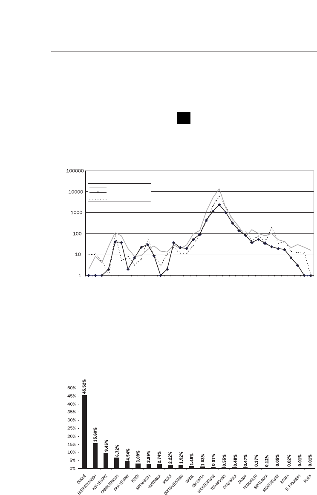
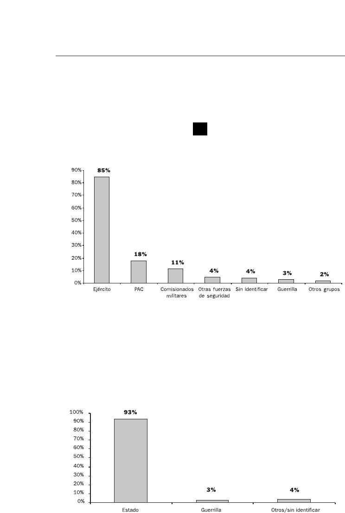

GUATEMALA
MEMORIA
DEL SILENCIO
Conclusiones
y Recomendaciones
GUATEMALA
MEMORIA
DEL SILENCIO
Informe de la Comisión
para el Esclarecimiento Histórico
TOMO V

Primera edición, junio de 1999
El contenido del Informe
Guatemala, memoria del silencio,
es responsabilidad únicamente de la
Comisión para el Esclarecimiento Histórico.
Esta publicación fue realizada
por la Oficina de Servicios para Proyectos
de las Naciones Unidas (UNOPS).
ISBN: 958-
DISEÑO: Servigráficos S.A.
Impreso en Guatemala
Esta obra puede ser reproducida total o parcialmente, por cualquier forma o medio,
sin consentimiento previo de UNOPS, siempre que se cite el crédito correspondiente.
PRÓLOGO 11
AGRADECIMIENTOS 15
INTRODUCCIÓN 19
CAPÍTULO CUARTO:
C
ONCLUSIONES 21
I. La tragedia del enfrentamiento
armado interno
21
II. Las violaciones de los derechos
humanos y los hechos
de violencia y sus responsables
41
III. Paz y reconciliación 55
CAPÍTULO QUINTO:
R
ECOMENDACIONES 59
I. Introducción 59
II. Medidas para preservar
la memoria de las víctimas
61
Índice
III. Medidas de reparación 62
IV. Medidas orientadas a fomentar
una cultura de respeto mutuo
y de observancia de los
derechos humanos
68
V. Medidas para fortalecer
el proceso democrático
72
VI. Otras recomendaciones
para promover la paz
y la concordia nacional
80
VII. Entidad responsable de impulsar
y vigilar el cumplimiento
de las recomendaciones
82
VIII.Petición a las Naciones Unidas 84
APÉNDICES 87
1. Cronología del período
del enfrentamiento armado en Guatemala 87
2. Períodos presidenciales de 1900 a 1996 94
3. Mapa de exclusión del desarrollo social 1996 98
4. Mapa de comunidades lingüísticas 99
5. Mapa de masacres por departamento 100
6. Principales violaciones por año
y departamento 101
7. Víctimas y violaciones por pertenencia étnica 102
8. Violaciones por fuerzas responsables 103

Mientras consume su cuota de vida,
¿cuántas verdades elude el ser humano?
AUGUSTO MONTERROSO
Movimiento perpetuo
El silencio perdió su trayectoria
frente a una mano que abre
las puertas a la voz.
FRANCISCO MORALES SANTOS
Al pie de la letra
Que la historia que pasamos
quede en las escuelas,
para que no se olvide,
para que nuestros hijos la conozcan.
UN TESTIGO ANTE LA CEH
Dejen de hacer el mal, aprendan a hacer el
bien. Busquen la justicia, den sus derechos
al oprimido, hagan justicia al huérfano y
defiendan la viuda.
ISAÍAS 1,17

G
uatemala es un país de contrastes y contradicciones, situado en la
mitad del continente americano, bañado por las olas del mar Cari-
be y del Pacífico. Sus habitantes conviven en una Nación de carác-
ter multiétnico, pluricultural y multilingüe, dentro de un Estado emergi-
do del triunfo de las fuerzas liberales en Centroamérica. Guatemala ha te-
nido hermosas y dignas épocas desde el inicio de la cultura maya milena-
ria hasta nuestros tiempos; su nombre ha sido glorificado por su ciencia,
sus obras, su arte, su cultura, por hombres y mujeres ilustres y humildes,
honrados y de paz, por el Premio Nobel de Literatura y por el Premio No-
bel de la Paz. Sin embargo, en Guatemala se han escrito páginas de ver-
güenza e infamia, ignominia y de terror, de dolor y de llanto como pro-
ducto del enfrentamiento armado entre hermanos. Por más de 34 años, los
guatemaltecos vivieron bajo la sombra del miedo, la muerte y la desapari-
ción como amenazas cotidianas para el ciudadano común.
La Comisión para el Esclarecimiento Histórico (CEH) fue establecida
mediante el Acuerdo de Oslo, del 23 de junio de 1994, para esclarecer con
toda objetividad, equidad e imparcialidad las violaciones a los derechos hu-
manos y los hechos de violencia que han causado sufrimientos a la pobla-
ción guatemalteca, vinculados con el enfrentamiento armado. La Comi-
sión no fue instituida para juzgar, pues para esto deben funcionar los tri-
bunales de justicia, sino para esclarecer la historia de lo acontecido duran-
te más de tres décadas de guerra fratricida.
Cuando los Comisionados integramos la CEH, cada uno por diferen-
te camino y todos por azares de la vida, sabíamos en sus grandes líneas lo
que había sucedido. Los dos Comisionados guatemaltecos vivimos toda la
tragedia en suelo patrio y, en una u otra forma, la padecimos. Sin embar-
go, ninguno imaginó la dantesca magnitud de lo ocurrido.
Fue mandato de la Comisión dar respuesta a interrogantes que conti-
núan vigentes en estos tiempos de paz: ¿Por qué un sector de la población
recurrió a la violencia armada para alcanzar el poder político? ¿Qué expli-
ca los actos de violencia desmedida, de diverso signo e intensidad, cometi-
dos por ambas partes en el enfrentamiento armado? ¿Por qué la violencia,
Prólogo

especialmente la proveniente del Estado, afectó a la población civil, en par-
ticular al pueblo maya, cuyas mujeres fueron consideradas como botín de
guerra y soportaron todo el rigor de la violencia organizada? ¿Por qué la ni-
ñez indefensa sufrió los actos de salvajismo? ¿Por qué en nombre de Dios
se pretendió exterminar de la faz de la tierra a los hijos e hijas de Xmuka-
ne’, la abuela de la vida y de la creación natural? ¿Por qué esos actos, de
barbarie ultrajante, no respetaron las reglas más elementales del derecho
humanitario, la ética cristiana y los valores de la espiritualidad maya?
Hemos recibido miles de testimonios, hemos asistido con los sobrevi-
vientes a momentos tan emotivos como las exhumaciones de sus seres que-
ridos en los cementerios clandestinos; hemos escuchado a antiguos jefes de
Estado, altos mandos del Ejército y de la guerrilla; hemos leído miles de
páginas de documentos que nos han entregado muy diversas organizacio-
nes de la sociedad civil. El Informe de la Comisión atiende todas las ver-
siones y recoge lo que hemos oído, visto y leído sobre tantas atrocidades y
brutalidades.
El propósito principal del Informe es dejar constancia del reciente pa-
sado sangriento de Guatemala. Aunque muchos saben que el enfrenta-
miento armado causó muerte y destrucción, la gravedad de los reiterados
atropellos que sufrió el pueblo todavía no ha sido asumida por la concien-
cia nacional. Las masacres que eliminaron comunidades mayas enteras
pertenecen a la misma realidad que la persecución urbana de la oposición
política, de líderes sindicales, de sacerdotes y catequistas. No se trata ni de
alegatos pérfidos ni de fantasmas, sino de un capítulo auténtico de la his-
toria de Guatemala.
Los autores del Acuerdo de Oslo pensaban que, a pesar del choque que
puede sufrir la nación al mirarse en el espejo de su pasado, es necesario co-
nocer y hacer pública la verdad. Esperaban que la verdad condujera a la re-
conciliación, aún más, que hacer frente a la verdad es camino indispensa-
ble para conseguir este objetivo.
Es indudable que la verdad beneficia a todos, víctimas y victimarios.
Las víctimas, cuyo pasado ha sido degradado y manipulado, se verán dig-
nificadas; los victimarios, por otro lado, podrán recuperar la dignidad de
la cual ellos mismos se privaron, por el reconocimiento de sus actos inmo-
rales y criminales.
Conociendo la verdad de lo sucedido será más fácil alcanzar la recon-
ciliación nacional, para que los guatemaltecos podamos en el futuro vivir
en una auténtica democracia, sin olvidar que el imperio de la justicia ha si-
do y es el clamor generalizado como medio para crear un Estado nuevo.
Sin embargo, nadie hoy puede asegurar si el inmenso desafío de la re-
conciliación a través de la verdad puede ser enfrentado con éxito. Se re-
quiere sobre todo que los hechos históricos sean reconocidos y que se
12

aprenda la lección enseñada por el sufrimiento de la Nación. El futuro de
Guatemala depende en gran medida de las respuestas que el Estado y la so-
ciedad sepan dar a las tragedias vividas por casi todos los guatemaltecos en
carne propia.
La creencia errónea de que el fin justifica cualquier medio convirtió a
Guatemala en un país de muerte y tristeza. Se debe recordar, de una vez
por todas, que no existen valores que estén por encima de las vidas de los
seres humanos y, en consecuencia, sobre la existencia y el bienestar de to-
da una comunidad nacional. El Estado no existe por sí mismo, existe co-
mo instrumento de organización mediante el que un pueblo cuida sus in-
tereses fundamentales.
Miles son los muertos. Miles son los deudos. La reconciliación de
quienes quedamos no es posible sin justicia. Miguel Angel Asturias, nues-
tro Premio Nobel, lo dijo: “Los ojos de los enterrados se cerrarán juntos el día
de la justicia, o no los cerrarán”.
Con tristeza y dolor hemos cumplido la misión encomendada. Pone-
mos el Informe de la CEH, esta memoria del silencio, en manos de los
guatemaltecos, hombres y mujeres de ayer y hoy, para que las nuevas ge-
neraciones conozcan las grandes calamidades y tragedias sufridas por este
pueblo. Que las lecciones de este Informe sirvan para reflexionar, escuchar
y comprender al otro y para ser creativos en la paz.
CHRISTIAN TOMUSCHAT OTILIA LUX DE COTÍ ALFREDO BALSELLS TOJO
13

L
a Comisión para el Esclarecimiento Histórico quiere expresar su
mayor reconocimiento a todo el pueblo de Guatemala, a las víc-
timas de la violencia del pasado, a sus familiares, a los testigos, a
tantas personas que, por iniciativa personal y con el fin de contribuir a
la reconciliación nacional a través del esclarecimiento de la historia, han
acudido y confiado en la CEH. Sin ellos, sin su asistencia, respaldo y
confianza, nuestra delicada tarea difícilmente habría sido cumplida en
su totalidad. Su permanente apoyo nos ha motivado e inspirado.
Las dos Partes firmantes del Acuerdo de Oslo, el Gobierno de la
República de Guatemala y la Unidad Revolucionaria Nacional Guate-
malteca, crearon y facilitaron las condiciones, particularmente con la
contribución financiera del Gobierno, para que la
CEH
pudiera insta-
larse y llevar a cabo las acciones derivadas de su mandato. El Congre-
so de la República ha contribuido cuantas veces ha sido requerido a fa-
cilitar el adecuado funcionamiento de la
CEH
. El Organismo Judicial
respondió de forma positiva y nos tomó en debida cuenta.
Diversas organizaciones guatemaltecas de derechos humanos, ya
desde el período preparatorio de la instalación, realizaron contribucio-
nes extremadamente valiosas al trabajo de la
CEH
. En general, las or-
ganizaciones de la sociedad civil guatemaltecas, desde las de derechos
humanos, de víctimas, indígenas, de mujeres y de otros ámbitos de ac-
tividad hasta las empresariales o de profesionales de diferentes especia-
lidades, prestaron un apoyo permanente a la labor encomendada a es-
ta Comisión.
Los medios de comunicación nacionales e internacionales cum-
plieron ejemplarmente su función de información social, al haber se-
guido con la mayor atención y de forma respetuosa el trabajo de la
CEH
. Ello permitió a la sociedad guatemalteca estar al tanto en cada
momento del avance de las tareas de la Comisión y recibir cuantos lla-
mamientos o comunicados le fueron dirigidos.
Sin el respaldo político y moral, así como las contribuciones finan-
cieras de la comunidad internacional, la
CEH
no habría podido llevar
Agradecimientos

a cabo el complejo trabajo realizado. Los gobiernos de Alemania, Aus-
tria, Bélgica, Canadá, Dinamarca, Estados Unidos de América, Italia,
Japón, Noruega, Países Bajos, Reino Unido de Gran Bretaña, Suecia,
Suiza y la Unión Europea han aportado fondos que han permitido cu-
brir las necesidades presupuestarias. El Gobierno de los Estados Uni-
dos de América realizó un muy significativo esfuerzo de desclasifica-
ción de documentos. El Gobierno de Argentina también hizo gestio-
nes importantes en apoyo de la
CEH
. Una mención muy especial me-
rece la Embajada de Noruega en Guatemala, que en todo momento
estuvo atenta a las necesidades de la Comisión y tomó continuas ac-
ciones para que fueran atendidas.
La
CEH
expresa su más alto reconocimiento al Secretario General
de las Naciones Unidas, que, atendiendo la petición formulada por las
Partes en el Acuerdo de Oslo, llevó a cabo todas las gestiones necesa-
rias para preparar el buen funcionamiento de la Comisión y estableció
un mecanismo, a través del Departamento de Asuntos Políticos, en
virtud del cual la Oficina de Servicios para Proyectos de las Naciones
Unidas (UNOPS) ha implementado como proyecto la Oficina de
Apoyo de la
CEH
. La UNOPS mostró una extraordinaria capacidad y
flexibilidad en el manejo de tan complejo proyecto.
El Sistema de las Naciones Unidas realizó aportaciones de exper-
tos y material que completaron las necesidades financieras. La Secreta-
ría General de las Naciones Unidas, el Alto Comisionado de las Na-
ciones Unidas para los Refugiados (ACNUR), el Fondo de las Nacio-
nes Unidas para la Infancia (UNICEF), la UNOPS, el Programa de las
Naciones Unidas para el Desarrollo (PNUD) y el Tribunal Penal In-
ternacional para la ex Yugoslavia contribuyeron con expertos. La Mi-
sión de Verificación de las Naciones Unidas en Guatemala
(MINUGUA) apoyó logísticamente de manera muy significativa el
trabajo de la Comisión.
Las ONG internacionales prestaron asistencia ya desde la fase de
instalación al trabajo de la Comisión, ofreciéndole asesoría técnica, fa-
cilitándole directamente información, sirviendo de canal para la con-
secución de la misma, divulgando el trabajo de la Comisión y realizan-
do valiosísimas gestiones para la obtención de información de otros
gobiernos. La Asociación Americana para el Avance de las Ciencias y
el Centro para los Derechos Humanos Robert F. Kennedy, destinán-
dole sendos expertos; la Fundación Ford, con una contribución finan-
ciera, y la Fundación Soros-Guatemala, mediante el préstamo de vehí-
culos, han asistido significativamente a la
CEH
.
Los miembros de la
CEH
en absoluto habríamos podido cumplir
con nuestro mandato si no hubiéramos recibido la asistencia de todo
16

el personal que ha integrado la Oficina de Apoyo bajo la responsabili-
dad del Secretario Ejecutivo. Todo el personal, el Equipo Central, los
responsables de las numerosas oficinas regionales, los investigadores,
analistas, intérpretes, administradores y demás asistentes, guatemalte-
cos y de 31 nacionalidades más, nos apoyó con un admirable compro-
miso y generosa dedicación, trabajando en condiciones muy a menu-
do difíciles y bajo permanente presión.
A todos: ¡Muchísimas gracias!
17

E
l Informe de la CEH ha sido estructurado de conformidad con los
objetivos y términos del mandato encomendado a ella por las Par-
tes del proceso de paz de Guatemala, comprendidos en el Acuerdo
concluido en Oslo (Noruega) el 23 de junio de 1994.
El Informe contiene en primer lugar una descripción del mandato y
del procedimiento de trabajo, para, seguidamente, entrar en el examen de
las causas y orígenes del enfrentamiento armado interno, las estrategias y
mecanismos de la violencia y sus consecuencias y efectos. Más adelante se
desarrollan las conclusiones. Otro capítulo está dedicado a las recomenda-
ciones, que constituyen la tercera finalidad del mandato de la CEH. Por
último, en anexos, se incluyen una relación de los casos que ilustran los fe-
nómenos del pasado, una breve descripción de todos y cada uno de los ca-
sos presentados a la Comisión y otros elementos que han sido utilizados en
el cumplimiento del mandato.
El presente volumen, que tiene como objeto adelantar su distribución
pública, contiene dos elementos centrales del Informe: las conclusiones y
las recomendaciones.
Las conclusiones condensan los resultados de la investigación llevada
a cabo durante casi un año y están fundamentadas en testimonios recibi-
dos directamente por la CEH y gran cantidad de información provenien-
te de otras fuentes, incluidas las Partes y otros gobiernos, así como de di-
versas fuentes secundarias. El análisis histórico y la información estadística
de la base de datos de la CEH complementan lo anterior.
Las conclusiones están estructuradas en tres acápites complementarios
entre sí: conclusiones de carácter general, conclusiones sobre los hechos
constitutivos de violaciones de los derechos humanos y hechos de violen-
cia y conclusiones relativas al proceso de paz y reconciliación. Las conclu-
siones cuentan también con varios apéndices para su más fácil lectura, que
incluyen una cronología de los gobiernos y del enfrentamiento armado en
Guatemala, mapas básicos e información estadística.
Las recomendaciones tienen como objetivo, según establece el manda-
to de la CEH, promover la paz y la concordia nacional en Guatemala. Se
Introducción

han estructurado entre medidas que se recomiendan para preservar la me-
moria de las víctimas, medidas para fomentar una cultura de respeto mu-
tuo y observancia de los derechos humanos, medidas para fortalecer el pro-
ceso democrático y otras recomendaciones para favorecer la paz y la con-
cordia nacional. Dentro de las medidas para preservar la memoria de las
víctimas se incluyen recomendaciones de reparación a las víctimas.
20
I. LA TRAGEDIA DEL ENFRENTAMIENTO ARMADO INTERNO
1.
Con el estallido del enfrentamiento armado interno en 1962, Guate-
mala entró en una etapa sumamente trágica y devastadora de su historia,
de enormes costos en términos humanos, materiales, institucionales y mo-
rales. En su labor de documentación de las violaciones de los derechos hu-
manos y hechos de violencia vinculados al enfrentamiento armado, la Co-
misión para el Esclarecimiento Histórico (CEH) registró un total de
42,275 víctimas, incluyendo hombres, mujeres y niños. De ellas, 23,671
corresponden a víctimas de ejecuciones arbitrarias y 6,159 a víctimas de
desaparición forzada. De las víctimas plenamente identificadas, el 83%
eran mayas y el 17% eran ladinos.
1
2.
Combinando estos datos con otros estudios realizados sobre la violencia
política en Guatemala, la CEH estima que el saldo en muertos y desapare-
cidos del enfrentamiento fratricida llegó a más de doscientas mil personas.
Las raíces históricas del enfrentamiento armado
3.
La Comisión para el Esclarecimiento Histórico concluye que la estruc-
tura y la naturaleza de las relaciones económicas, culturales y sociales en
Guatemala han sido profundamente excluyentes, antagónicas y conflicti-
vas, reflejo de su historia colonial. Desde la independencia proclamada en
1821, acontecimiento impulsado por las elites del país, se configuró un Es-
tado autoritario y excluyente de las mayorías, racista en sus preceptos y en
su práctica, que sirvió para proteger los intereses de los restringidos secto-
res privilegiados. Las evidencias, a lo largo de la historia guatemalteca, y
con toda crudeza durante el enfrentamiento armado, radican en que la vio-
lencia fue dirigida fundamentalmente desde el Estado, en contra de los ex-
cluidos, los pobres y, sobre todo, la población maya, así como en contra de
los que luchaban a favor de la justicia y de una mayor igualdad social.
Capítulo cuarto:
Conclusiones
1 A lo largo de estas conclusiones se presentan algunas cifras que corresponden únicamente a los ca-
sos documentados por la ceh. Representan una muestra de las violaciones de los derechos huma-
nos y hechos de violencia vinculados al enfrentamiento armado.

4.
El carácter antidemócrático de la tradición política guatemalteca tiene
sus raíces en una estructura económica caracterizada por la concentración
en pocas manos de los bienes productivos, sentando con ello las bases de
un régimen de exclusiones múltiples, a las que se sumaron los elementos
de una cultura racista, que es a su vez la expresión más profunda de un sis-
tema de relaciones sociales violentas y deshumanizadoras. El Estado se fue
articulando paulatinamente como un instrumento para salvaguardar esa
estructura, garantizando la persistencia de la exclusión y la injusticia.
5.
La ausencia de una política social eficaz por parte del Estado, con ex-
cepción de la época que abarca de 1944 hasta 1954, acentuó esta dinámi-
ca histórica excluyente. En muchos casos las políticas estatales durante el
período reciente propiciaron las desigualdades o, como mínimo, su endé-
mica debilidad institucional permitió que éstas se exacerbaran. Como
muestra, durante los veinte años de mayor crecimiento económico en
Guatemala (1960-1980), el gasto social del Estado fue el menor de Cen-
troamérica y la carga tributaria fue a su vez la más baja.
6.
Por su mismo carácter excluyente el Estado fue incapaz de lograr un
consenso social en torno a un proyecto de nación que pudiera aglutinar al
conjunto de la población. Concomitantemente renunció a su papel de me-
diador entre los intereses sociales y económicos divergentes, abriendo un
vacío que facilitó la confrontación directa entre los sectores afectados. De
especial preocupación para la CEH fue la manera en que las sucesivas
Constituciones de la República y las garantías de los derechos humanos y
cívicos explicitadas en ellas, se convirtieron en instrumentos formales, vio-
lados por diversas estructuras del mismo Estado.
7.
El poder legislativo y los partidos políticos que en él participaron, tam-
bién contribuyeron en distintos momentos a la creciente polarización y
exclusión, dictando normas legales que legitimaron los regímenes de ex-
cepción y supresión de los derechos civiles y políticos, así como dificulta-
ron o impidieron procesos de cambio. Se produjo una ausencia efectiva de
mecanismos institucionales apropiados para canalizar las inquietudes, rei-
vindicaciones y propuestas de los distintos grupos de población. La falta
de cauces para orientar constructivamente el disenso a través de fórmulas
de mediación propias de los sistemas democráticos, consolidó aún más
una cultura política confrontativa e intolerante y provocó una retroali-
mentación casi ininterrumpida de inestabilidad que impregnó todo el or-
den social.
8.
Quedó así conformado un círculo vicioso donde la injusticia social pro-
vocó protesta y luego inestabilidad política, que permanentemente sólo tu-
vo dos respuestas: represión o golpe militar. Frente a movimientos que pro-
ponían reivindicaciones económicas, políticas, sociales o culturales, el Es-
tado recurrió crecientemente a la violencia y el terror para mantener el
22

control social. En este sentido la violencia política fue una expresión direc-
ta de la violencia estructural de la sociedad.
La represión sustituye a las leyes
9.
La CEH ha concluido que, durante los años del enfrentamiento arma-
do, la incapacidad del Estado guatemalteco para aportar respuestas a las le-
gítimas demandas y reivindicaciones sociales desembocó en la conforma-
ción de una intrincada red de aparatos paralelos de represión que suplan-
taron la acción judicial de los tribunales, usurpando sus funciones y pre-
rrogativas. Se instauró de hecho un sistema punitivo ilegal y subterráneo,
orquestado y dirigido por las estructuras de Inteligencia militar. Este siste-
ma fue utilizado como la principal forma de control social por parte del
Estado a lo largo del enfrentamiento armado interno, complementado por
la colaboración directa o indirecta de sectores económicos y políticos do-
minantes.
La ineficacia de la justicia
10.
El sistema judicial del país, por su ineficacia provocada o deliberada,
no garantizó el cumplimiento de la ley, tolerando y hasta propiciando la
violencia. Por omisión o acción, el poder judicial contribuyó al agrava-
miento de los conflictos sociales en distintos momentos de la historia de
Guatemala. La impunidad caló hasta el punto de apoderarse de la estruc-
tura misma del Estado, y se convirtió tanto en un medio como en un fin.
Como medio, cobijó y protegió las actuaciones represivas del Estado así
como las de particulares afines a sus propósitos, mientras que, como fin,
fue consecuencia de los métodos aplicados para reprimir y eliminar a los
adversarios políticos y sociales.
El cierre de los espacios políticos
11.
Después del derrocamiento del Gobierno del coronel Jacobo Arbenz
en 1954 tuvo lugar un acelerado proceso de cierre de espacios políticos,
inspirado en un anticomunismo fundamentalista que anatematizó un mo-
vimiento social amplio y diverso, consolidando mediante las leyes el carác-
ter restrictivo y excluyente del juego político. Estas restricciones a la parti-
cipación política fueron pactadas por diversos sectores de poder fáctico del
país y activadas por las fuerzas civiles y políticas de esa época. Este proce-
so constituye en sí mismo una de las evidencias más contundentes de las
estrechas relaciones entre el poder militar, el poder económico y los parti-
dos políticos surgidos en 1954. A partir de 1963, además de las restriccio-
nes legales, la creciente represión estatal contra sus reales o supuestos opo-
sitores fue otro factor decisivo en el cierre de las opciones políticas en Gua-
temala.
23

Las causas profundas del enfrentamiento armado
12.
La CEH concluye que fenómenos coincidentes como la injusticia es-
tructural, el cierre de los espacios políticos, el racismo, la profundización
de una institucionalidad excluyente y antidemocrática, así como la renuen-
cia a impulsar reformas sustantivas que pudieran haber reducido los con-
flictos estructurales, constituyen los factores que determinaron en un sen-
tido profundo el origen y ulterior estallido del enfrentamiento armado.
Guerra Fría, Doctrina de Seguridad Nacional
y el papel de los Estados Unidos
13.
La CEH reconoce que el avance de la sociedad y del Estado hacia la
polarización, la militarización y la guerra intestina no sólo fueron efectos
procedentes de la historia nacional. La Guerra Fría tuvo también influen-
cia especial. La política anticomunista promovida por los Estados Unidos
en el marco de sus relaciones exteriores recibió un decidido apoyo de los
partidos políticos de derecha y los diversos sectores de poder guatemalte-
cos, mientras aquel país se mostró dispuesto a brindar su respaldo a regí-
menes militares fuertes en su traspatio estratégico. En el caso guatemalte-
co se concretó en el plano militar mediante asistencia destinada a reforzar
los aparatos de Inteligencia nacionales y entrenar a la oficialidad en la gue-
rra contrainsurgente, factores claves que incidieron en las violaciones de los
derechos humanos durante el enfrentamiento armado.
14.
El anticomunismo y la Doctrina de Seguridad Nacional (DSN) fue-
ron parte de la estrategia antisoviética de los Estados Unidos en América
Latina. En Guatemala asumieron primero un sentido antirreformista, lue-
go antidemocrático y, en último término, contrainsurgente convertido en
criminal. La Doctrina de Seguridad Nacional encontró terreno fértil en
Guatemala en el pensamiento anticomunista ya arraigado en el país, don-
de dicho pensamiento se fundió desde los años treinta con una actitud de
defensa de la religión, las tradiciones y los valores conservadores supuesta-
mente amenazados por la expansión mundial del comunismo ateo. Hacia
los años cincuenta esta actitud fue apoyada con fuerza por la alta jerarquía
de la Iglesia Católica, que condujo a calificar de “comunista” cualquier
postura que contradijera su discurso, contribuyendo a dividir y confundir
aún más a la sociedad guatemalteca.
El enemigo interno
15.
Durante el período del enfrentamiento armado la noción de “enemi-
go interno”, intrínseca a la Doctrina de Seguridad Nacional, se volvió cada
vez más amplia para el Estado. Esta doctrina se convirtió, a la vez, en ra-
zón de ser del Ejército y en política de Estado durante varias décadas. Me-
diante su investigación, la CEH recogió uno de los efectos más devastado-
24

res de esta política: las fuerzas del Estado y grupos paramilitares afines fue-
ron responsables del 93% de las violaciones documentadas por la CEH,
incluyendo el 92% de las ejecuciones arbitrarias y el 91% de las desapari-
ciones forzadas. Las víctimas comprenden a hombres, mujeres y niños de
todos los estratos del país: obreros, profesionales, religiosos, políticos, cam-
pesinos, estudiantes y académicos; la gran mayoría en términos étnicos,
pertenecientes al pueblo maya.
La Iglesia Católica
16.
La Iglesia Católica transitó, en muy corto tiempo en la historia recien-
te de Guatemala, de una postura conservadora hacia posiciones y prácticas
que, fundamentadas en el Concilio Vaticano Segundo (1962-1965) y la
Conferencia Episcopal de Medellín (1968), priorizaban el trabajo con los
excluidos, los pobres y los marginados, promoviendo la construcción de
una sociedad más justa y equitativa. Estos cambios doctrinales y pastorales
chocaron con la estrategia contrainsurgente que consideró a los católicos
como aliados de la guerrilla y por tanto parte del enemigo interno, sujeto
de persecución, muerte o expulsión. Por su lado, la guerrilla vio en la prác-
tica de la llamada “teología de la liberación”, un punto de encuentro para
extender su base social, buscando ganar la simpatía de sus adeptos. Un
gran número de catequistas, delegados de la Palabra, sacerdotes, religiosas
y misioneros fueron víctimas de la violencia y dieron su vida como testi-
monio de la crueldad del enfrentamiento armado.
La insurgencia guatemalteca,
la lucha armada y la influencia cubana
17.
La insurgencia guatemalteca, por su parte, surgió como la respuesta
de un sector de la población ante los diversos problemas estructurales del
país. Frente a la injusticia, la exclusión, la pobreza y la discriminación, pro-
clamó la necesidad de tomar el poder para construir un nuevo orden so-
cial, político y económico. A lo largo del enfrentamiento armado los gru-
pos insurgentes asumieron las tesis de la doctrina marxista en sus diversas
orientaciones internacionales. Aunque tuvieron un tronco histórico co-
mún en el proscrito partido comunista, el Partido Guatemalteco del Tra-
bajo (PGT), varias organizaciones surgieron como resultado de una críti-
ca al mismo, por su renuencia a seguir el camino de la lucha armada.
18.
La influencia de Cuba y su exaltación de la lucha armada incidieron
en estos procesos tanto en Guatemala como en el resto del continente la-
tinoamericano. Sobre este punto, la CEH concluye que el apoyo político,
logístico, de instrucción y entrenamiento que prestó Cuba a la insurgencia
guatemalteca durante todo el período, supuso otro factor externo impor-
tante que marcó la evolución del enfrentamiento armado. En el contexto
25

de un Estado crecientemente represivo, sectores de la izquierda, en concre-
to aquellos que seguían la ideología marxista, asumieron la perspectiva cu-
bana de la lucha armada como vía única para la defensa de los derechos del
pueblo y la toma del poder.
19.
En la medida en que la represión estatal se intensificó y amplió la co-
bertura de sus potenciales víctimas, la tendencia rebelde que cifraba la so-
lución política nacional en el triunfo de la guerrilla se vio fortalecida. Más
que compartir un proyecto político-ideológico concreto, durante la mayor
parte del enfrentamiento la cohesión de la insurgencia guatemalteca se de-
finió en torno a la necesidad y primacía de la lucha armada casi como úni-
ca solución.
20.
Durante su investigación la CEH comprobó que el trabajo político
de las organizaciones guerrilleras dentro de los diversos sectores de la so-
ciedad fue orientado crecientemente a fortalecer su capacidad militar, en
perjuicio del estilo de acción política propio de sectores democráticos. Asi-
mismo, los intentos de otras fuerzas políticas para aprovechar los limita-
dos espacios de participación legal fueron descalificados con radicalidad
por algunos sectores de la insurgencia como “reformistas” o “disidentes”,
mientras las personas que pretendían mantenerse al margen del enfrenta-
miento eran tratadas con profunda desconfianza y hasta como potenciales
enemigos, contribuyendo también por este lado a la intolerancia política
y la polarización.
Los enemigos de los grupos insurgentes
21.
Además de la clara definición del Ejército como su enemigo, los gru-
pos insurgentes incluyeron también en esta categoría a civiles, representan-
tes del poder económico y político que consideraban afines a la represión,
así como a personas de las que, en especial en las áreas rurales, se sospecha-
ba que prestaban apoyo al Ejército o que ejercían un poder económico lo-
cal. Entre los casos registrados por la CEH las acciones de los grupos in-
surgentes produjeron el 3% de las violaciones de los derechos humanos y
hechos de violencia, entre hombres, mujeres y niños, incluyendo un 5%
de las ejecuciones arbitrarias y un 2% de las desapariciones forzadas.
Más allá de las dos Partes
22.
Si bien en el enfrentamiento armado aparecen como actores más vi-
sibles el Ejército y la insurgencia, la investigación realizada por la CEH ha
puesto de manifiesto la implicación de todo el Estado, unificando sus di-
versas instituciones y mecanismos coactivos. Asimismo se constata la res-
ponsabilidad y participación, bajo diferentes formas, de los grupos de po-
der económico, los partidos políticos, los universitarios y las iglesias, así co-
mo otros sectores de la sociedad civil.
26

23.
Por ello, la CEH concluye que la explicación de fondo del enfrenta-
miento armado guatemalteco no puede reducirse a una lógica de dos acto-
res armados. Tal interpretación no explica ni podría fundamentar la persis-
tencia y la significación que tuvo la participación de los partidos políticos
y fuerzas económicas en la génesis, desarrollo y perpetuación de la violen-
cia; ni los repetidos esfuerzos organizativos y la constante movilización de
sectores de la población que luchaban por alcanzar reivindicaciones econó-
micas, políticas y culturales.
La respuesta represiva desproporcionada
24.
La magnitud de la respuesta represiva del Estado, absolutamente des-
proporcionada en relación con la fuerza militar de la insurgencia, sólo pue-
de entenderse en el marco de los profundos conflictos sociales, económi-
cos y culturales del país. Sobre la base de los resultados de su investigación,
la CEH concluye que en el período 1978-1982 se produjo entre amplios
sectores de la ciudadanía una creciente movilización social y oposición po-
lítica a la continuidad del orden establecido, cuyas expresiones organiza-
das, en algunos casos, mantuvieron relaciones de diversa índole con la in-
surgencia. No obstante, en ningún momento del enfrentamiento armado
interno los grupos guerrilleros tuvieron el potencial bélico necesario para
constituir una amenaza inminente para el Estado. Los contados comba-
tientes no pudieron competir en el plano militar con el Ejército de Guate-
mala, que dispuso de más efectivos, muy superior armamento, así como
mejor entrenamiento y coordinación. También se ha constatado que du-
rante el enfrentamiento armado, el Estado y el Ejército conocían el grado
de organización, el número de efectivos, el tipo de armamento y los planes
de acción de los grupos insurgentes. De esta forma, fueron conscientes de
que la capacidad militar de la insurgencia no representaba una amenaza
concreta para el orden político guatemalteco.
25.
La CEH concluye que el Estado magnificó deliberadamente la ame-
naza militar de la insurgencia, práctica que fue acreditada en su concepto
del enemigo interno. Incluir en un solo concepto a los opositores, demó-
cratas o no; pacifistas o guerrilleros; legales o ilegales; comunistas y no co-
munistas, sirvió para justificar graves y numerosos crímenes. Frente a una
amplia oposición de carácter político, socioeconómico y cultural, el Esta-
do recurrió a operaciones militares dirigidas a aniquilarla físicamente o
amedrentarla por completo, a través de un plan represivo ejecutado prin-
cipalmente por el Ejército y los demás cuerpos de seguridad nacional. So-
bre esta base la CEH explica por qué la vasta mayoría de las víctimas de
las acciones del Estado no fueron combatientes de los grupos guerrilleros
sino civiles.
27

La concentración territorial
de las operaciones militares y sus víctimas
26.
Con base en la información procesada por la CEH, se constatan di-
ferencias relevantes en la concentración territorial de las operaciones mili-
tares y en el tipo de víctimas, dependiendo del período específico del en-
frentamiento armado. En el período 1962-1970, las operaciones se con-
centraron en Oriente, la ciudad de Guatemala y la Costa Sur, siendo las
víctimas fundamentalmente campesinos, miembros de las organizaciones
gremiales rurales, profesores y estudiantes universitarios y secundarios, y
simpatizantes de la guerrilla. En los años 1971-1977 los operativos de la
represión fueron más selectivos y dispersos; las víctimas incluyeron líderes
comunitarios, dirigentes sindicales, catequistas y estudiantes.
27.
Durante el período más violento y sanguinario de todo el enfrenta-
miento armado (1978-1985) los operativos militares se concentraron en
Quiché, Huehuetenango, Chimaltenango, Alta y Baja Verapaz, en la Cos-
ta Sur y la capital. Las víctimas fueron mayoritariamente población maya
y en menor proporción ladinos. En el último período (1986-1996) las ac-
ciones represivas tuvieron un carácter selectivo, afectando casi por igual a
población maya y ladina. Las Comunidades de Población en Resistencia
constituyeron un objetivo prioritario de las operaciones militares en el
área rural.
La niñez
28.
La CEH constata con particular preocupación que gran cantidad de
niños y niñas también se encontraron entre las víctimas directas de ejecu-
ciones arbitrarias, desapariciones forzadas, torturas y violaciones sexuales,
entre otros hechos violatorios de sus derechos elementales. Además, el en-
frentamiento armado dejó un número importante de niños huérfanos y
desamparados, especialmente entre la población maya, que vieron rotos
sus ámbitos familiares y malogradas sus posibilidades de vivir la niñez den-
tro de los parámetros habituales de su cultura.
Las mujeres
29.
La investigación de la CEH permitió determinar que aproximada-
mente una de cada cuatro víctimas directas de las violaciones de los dere-
chos humanos y hechos de violencia fueron mujeres. Murieron, fueron de-
saparecidas, torturadas y violadas sexualmente, a veces por sus ideales y su
participación política y social; otras fueron víctimas de las masacres y otras
acciones indiscriminadas. Miles de mujeres perdieron a sus esposos, que-
dándose viudas y como único sostén de sus hijos, a menudo sin recursos
materiales luego de la destrucción de sus casas y cultivos en las operacio-
nes de tierra arrasada. Sus esfuerzos para reconstruir sus vidas y mantener
sus familias merecen un reconocimiento particular.
28

30.
A la vez la CEH reconoce que las mujeres, familiares de víctimas en
su mayoría, han jugado un papel ejemplar en la defensa de los derechos
humanos durante el enfrentamiento armado, como impulsoras y dirigen-
tes de diversas organizaciones de familiares de desaparecidos y de lucha
contra la impunidad.
Los mayas como enemigo colectivo del Estado
31.
En los años de exacerbación del enfrentamiento (1978-1983), con la
ampliación de la base de apoyo y el ámbito de acción de la guerrilla, en va-
rias regiones del país el Ejército identificó a los mayas como grupo afín a
la guerrilla. En algunas ocasiones esta identificación se produjo en razón
de la efectiva existencia de su apoyo a los grupos insurgentes, así como de
condiciones preinsurreccionales en áreas de limitada extensión en el inte-
rior del país. Sin embargo, la CEH ha llegado a precisar que, en la mayo-
ría de los casos, la identificación entre las comunidades mayas y la insur-
gencia fue intencionadamente exagerada por el Estado que, apoyándose en
tradicionales prejuicios racistas, se sirvió de esta identificación para elimi-
nar las posibilidades presentes y futuras para que la población prestara ayu-
da o se incorporara a cualquier proyecto insurgente.
32.
La consecuencia de esta manipulación, ampliamente documentada
por la CEH, fue la agresión masiva e indiscriminada a las comunidades, con
independencia de su real involucramiento en la guerrilla, así como con in-
diferencia a su condición de población civil, no combatiente. Con las ma-
sacres, las operaciones de tierra arrasada, el secuestro y ejecución de autori-
dades, líderes mayas y guías espirituales, no sólo se buscaba quebrar las ba-
ses sociales de la guerrilla, sino desestructurar ante todo los valores cultura-
les que aseguraban la cohesión y la acción colectiva de las comunidades.
El racismo en la violencia
33.
Mediante su investigación, la CEH también concluye que la innega-
ble realidad del racismo como doctrina de superioridad expresada perma-
nentemente por el Estado constituye un factor fundamental para explicar
la especial saña e indiscriminación con que se realizaron las operaciones mi-
litares contra centenares de comunidades mayas en el occidente y norocci-
dente del país, en particular entre 1981 y 1983, cuando se concentraron
más de la mitad de las masacres y acciones de tierra arrasada en su contra.
El repliegue de la guerrilla
34.
La CEH ha comprobado que la guerrilla aplicó una táctica de “propa-
ganda armada” y de ocupación temporal de pueblos, para ganar partidarios
o demostrar su fuerza; pero al retirarse, dejaba a las comunidades indefen-
sas y vulnerables. En muchos casos estas comunidades fueron luego ataca-
29

das por el Ejército, con un saldo muy elevado de muertos entre la pobla-
ción civil, especialmente en el pueblo maya. En algunos de ellos conocidos
por la CEH, aldeas enteras fueron arrasadas por las fuerzas militares del Es-
tado pocos días después del retiro de los grupos insurgentes que las ocupa-
ban. En estos casos, aun reconociendo la clara y exclusiva autoría del Ejér-
cito como responsable de las violaciones masivas, la CEH tiene la convic-
ción de que las acciones de la guerrilla incidieron para desencadenar estos
hechos.
35.
Frente a las operaciones de tierra arrasada y las masacres, que corres-
pondían a una estrategia y a la planificación sistemática del Ejército, la gue-
rrilla fue incapaz de proteger a la población que había simpatizado con sus
propósitos o que la había apoyado. Esta incapacidad provocó en estos sec-
tores un amplio sentimiento de abandono, decepción y rechazo.
La militarización
36.
La CEH ha constatado que la militarización del Estado y la sociedad
constituyó un objetivo estratégico definido, planeado y ejecutado institu-
cionalmente por el Ejército de Guatemala, a partir de la Doctrina de Se-
guridad Nacional y su peculiar interpretación de la realidad nacional. La
militarización presentó características diferentes a lo largo de los años del
enfrentamiento armado. Empezó durante los años sesenta y setenta con el
dominio que el Ejército impuso sobre las estructuras del poder ejecutivo.
Luego asumió el ejercicio casi absoluto del poder mediante su penetración
en todas las instituciones y espacios políticos, sociales e ideológicos del país
durante media década en los años ochenta, hasta llegar —en la etapa fi-
nal— a tener un control paralelo, semivisible, de bajo perfil, pero de alto
impacto, en la vida nacional.
37.
La militarización fue en su momento uno de los factores que alimen-
tó e incentivó el enfrentamiento armado, al limitar profundamente las po-
sibilidades del ejercicio de los derechos cívicos, para luego constituir una
de las consecuencias más corrosivas del mismo. La militarización constitu-
yó un soporte de la impunidad. Además, en un sentido amplio, debilitó el
tejido institucional del país, redujo sus posibilidades de funcionamiento
real y contribuyó a la deslegitimización del mismo, ya que durante años la
población ha vivido con la certeza de que el Ejército detentaba el poder
efectivo en el país.
La Inteligencia militar
38.
Basándose en la investigación realizada, la CEH también concluye
que las estructuras de Inteligencia militar en Guatemala han jugado un
papel determinante en la militarización del país. No se conformaron con
ejercer las funciones habituales de los órganos de esta naturaleza en el
30

marco de un Estado democrático de Derecho, que consisten en sistema-
tizar e interpretar información trascendental para la seguridad del país.
Más bien, el sistema de Inteligencia de Guatemala fue el eje conductor de
una política de Estado que aprovechó el escenario, delimitado por el en-
frentamiento armado, para controlar a la población, a la sociedad, al Es-
tado y al propio Ejército. Este dominio exhaustivo se fundamentó en una
estrategia político-militar y se llevó a la práctica activando mecanismos
violatorios de los derechos humanos, así como la Constitución y las leyes
de la República.
39.
La CEH ha comprobado que el control ejercido por la Inteligencia
militar dependía no sólo de sus estructuras formales, sino también de una
amplísima red de informantes infiltrados en las organizaciones sociales, las
comunidades y diversas instituciones del Estado. Por ese medio accedió a
un cúmulo de información que le ha permitido manejar a otras estructu-
ras del Ejército, así como manipular diversos intereses y entidades del Es-
tado y de la sociedad civil guatemalteca. Uno de los objetivos de la incor-
poración de la Inteligencia en las instituciones estatales fue multiplicar sus
recursos de información y de guerra psicológica. A la vez, los órganos de
Inteligencia infiltraron sus agentes en las organizaciones sociales, donde
muchos activistas fueron luego víctimas de graves violaciones de derechos
humanos.
40.
La investigación de la CEH ha corroborado que en Guatemala los ser-
vicios de Inteligencia militar realizaron operaciones no convencionales y de
carácter irregular ajenas a cualquier orden o referencia legal. Sus operacio-
nes ilegales fueron clandestinas, tanto en su preparación como en su desa-
rrollo. El propósito de estas misiones fue garantizar el secreto de un traba-
jo para que no se pudiera determinar la autoría intelectual y material de los
hechos, exculpar de toda responsabilidad a los agentes del Estado y asegu-
rar así la inutilidad de cualquier investigación judicial y policial.
41.
Dicha actividad clandestina se manifestó en la utilización de centros
ilegales de detención, o “cárceles clandestinas”, que existieron en casi todas
las instalaciones del Ejército de Guatemala, en muchas instalaciones poli-
ciales y hasta en casas y locales privados. En estos sitios a las víctimas no
sólo se les arrebató su libertad de modo arbitrario, sino que casi siempre
fueron objeto de interrogatorios acompañados de tortura o tratos crueles,
inhumanos o degradantes. En la mayoría de los casos los detenidos eran
desaparecidos o ejecutados. En los pocos casos en que los detenidos eran
liberados no medió ningún procedimiento judicial. En algunas ocasiones
las víctimas eran obligadas a trabajar de manera ilegal y clandestina para
el Ejército a cambio de su libertad parcial. Las oportunidades en que di-
chas personas fueron puestas a disposición de los tribunales competentes
son excepcionales.
31

Los Kaibiles
42.
La fuerza especial contrainsurgente del Ejército, denominada Kaibi-
les, ha llamado poderosamente la atención de la CEH, al constatar los con-
tenidos degradantes de su proceso de entrenamiento, que incluyó matar
animales para posteriormente comérselos crudos y beber su sangre para
evidenciar valor. La extrema crueldad de estos métodos de entrenamiento,
según los testimonios de que dispone la CEH, fueron puestos en práctica
en diversos operativos llevados a cabo por estas tropas, haciendo cierto uno
de los puntos del decálogo de sus miembros: “El Kaibil es una máquina de
matar”.
La policía militarizada
43.
La CEH concluye que la Policía Nacional y la Guardia de Hacienda,
dos importantes fuerzas de seguridad del Estado, también cometieron nu-
merosas y graves violaciones de los derechos humanos durante el enfrenta-
miento armado. Hacia mediados de los años sesenta, estas fuerzas inicia-
ron su subordinación al control del Ejército, situación que se mantuvo a lo
largo del enfrentamiento. Actuando con frecuencia bajo órdenes de estruc-
turas del Ejército, los “detectives” y otras fuerzas policiales que se vestían de
civil, se convirtieron en los principales agentes del terror estatal en la capi-
tal de Guatemala durante casi veinte años.
El terror
44.
La CEH comprobó que a lo largo del enfrentamiento armado el Ejér-
cito diseñó e implementó una estrategia para provocar terror en la pobla-
ción. Esta estrategia se convirtió en el eje de sus operaciones, tanto en las
de estricto carácter militar como en las de índole psicológica y las denomi-
nadas de desarrollo.
45.
Las organizaciones guerrilleras cometieron hechos violentos de extre-
ma crueldad que aterrorizaron a la población y dejaron secuelas importan-
tes en la misma. Fueron las ejecuciones arbitrarias, sobre todo las cometi-
das frente a familiares y vecinos, las que agudizaron el clima de miedo, ar-
bitrariedad e indefensión ya generalizado en la población.
46.
El terror de Estado se intensificó en Guatemala a partir de 1966,
cuando inició un proceso cuyas etapas más agudas correspondieron a los
períodos de máxima violencia y cuyos epicentros se ubicaron en los esce-
narios donde la represión fue más intensa. Una gran parte de las violacio-
nes de los derechos humanos conocidas por la CEH, cometidas por el
Ejército u otros cuerpos de seguridad, fueron perpetradas con ensañamien-
to y en forma pública, especialmente en las comunidades mayas del inte-
rior del país. Asimismo, al tomar en cuenta los métodos de entrenamien-
to de las fuerzas del Ejército —y en especial de los Kaibiles— la CEH ha
32

determinado que la crueldad extrema fue un recurso utilizado con inten-
ción para generar y mantener un clima de terror en la población.
47.
El terror no se redujo a los hechos violentos o a las operaciones mili-
tares; dependía además de otros mecanismos conexos como la impunidad
de los ejecutores, las extensas campañas para criminalizar a las víctimas y
la implicación forzada de la población civil en la cadena causal y la ejecu-
ción efectiva de las atrocidades. Por estas razones, el terror no se extingue
automáticamente cuando los niveles de violencia descienden, sino que tie-
ne efectos acumulativos y perdurables, los cuales requieren tiempo, esfuer-
zo y experiencias de nuevo tipo para superarlos.
48.
La investigación ha establecido que, más allá de la eliminación física
de sus opositores, supuestos o reales, el terror de Estado se fomentó para
dejar claro que quienes participaban en actividades reivindicativas, e inclu-
so sus familiares, corrían el riesgo de perder la vida en medio de los mayo-
res tormentos. Tuvo el objetivo de intimidar y callar al conjunto de la so-
ciedad para aniquilar su voluntad de transformación, a corto e incluso lar-
go plazo.
La criminalización de las víctimas
49.
El Estado procuró también estigmatizar y culpabilizar a las víctimas y
las organizaciones sociales, para transformarlas así en criminales en la ima-
gen pública y por lo tanto en objetivos “legítimos” de la represión; lo pre-
tendía al despojarlas de su dignidad como personas difundiendo a sangre
y fuego la lección de que el ejercicio de los derechos cívicos podría ser
castigado con la muerte. La CEH considera que este adoctrinamiento sis-
temático ha dejado huellas profundas en el subconsciente colectivo de la
sociedad guatemalteca. El miedo, el silencio, la apatía y la falta de interés
en la esfera de participación política son algunas de las secuelas más impor-
tantes que resultaron de la criminalización de las víctimas y suponen un
obstáculo para la intervención activa de toda la ciudadanía en la construc-
ción de la democracia.
La complicidad forzada en la violencia
50.
La CEH concluye que entre los daños más drásticos del enfrenta-
miento se cuentan aquéllos que fueron consecuencias de haber obligado a
amplios sectores de la población a convertirse en cómplices forzados de la
violencia, en especial por su participación en las Patrullas de Autodefensa
Civil (PAC), estructuras paramilitares creadas por el Ejército en casi toda
la República, a partir de 1981. La CEH ha conocido centenares de casos
en que los civiles fueron obligados por el Ejército, bajo la amenaza de las
armas, a violar a mujeres, torturar, mutilar cadáveres y matar. En estos ca-
sos, el recurso a la extrema crueldad fue utilizado por el Estado como me-
33

dio de disgregación social. La participación forzada, de modo especial en
las comunidades mayas, de gran parte de la población masculina mayor de
15 años en las PAC, trastocó valores y patrones de conducta al normalizar
la violencia como método para enfrentar situaciones de conflicto y al fo-
mentar el desprecio por la vida de los otros.
El poder local arbitrario
51.
Entraña un motivo de especial preocupación para la CEH el hecho
que, en ciertos casos, se terminó creando victimarios civiles que luego, por
convicción propia, cometieron atrocidades extremas contra sus propios ve-
cinos, e incluso contra sus familiares cercanos. Se instituyó un poder arma-
do sin controles que pudo actuar de manera arbitraria en las aldeas, persi-
guiendo fines particulares y abusivos.
52.
La convivencia entre víctimas y victimarios reproduce el clima de mie-
do y el silencio. Para las víctimas, la confrontación diaria con sus victima-
rios mantiene viva la memoria dolorosa de las violaciones. La CEH ha com-
probado que un gran número de personas, por temor a represalias, sigue ca-
llando sus sufrimientos pasados y presentes, mientras la interiorización de
los traumas impide un proceso de definitiva curación de las heridas.
El duelo alterado y los cementerios clandestinos
53.
Los testimonios recibidos por la CEH dan fe de las múltiples circuns-
tancias que, durante el enfrentamiento armado, impidieron a miles de gua-
temaltecos poder observar los ritos que normalmente acompañan la muer-
te y entierro de una persona, provocando un hondo dolor que persiste en
los sectores de la población afectada. La desaparición forzada fue la prácti-
ca más perniciosa en este sentido, por la incertidumbre que imponía acer-
ca del paradero o destino de la persona. Asimismo, el clima de terror, la
presencia militar y otras circunstancias que rodeaban las masacres, la hui-
da y la persecución en la montaña, hacían frecuentemente inviable el en-
tierro de los muertos. Para todas las culturas y religiones presentes en Gua-
temala, es casi inconcebible no dar digna sepultura a los fallecidos: violen-
ta los valores y la dignidad de todos. Para los mayas, este fenómeno cobra
una importancia particular por la relevancia central que tiene en su cultu-
ra el vínculo activo que une a los vivos con los muertos. La falta de un lu-
gar sagrado a donde acudir para velar por este nexo constituye una preo-
cupación profunda que brota de los testimonios de muchas comunidades
mayas.
54.
La CEH ha concluido que los cementerios clandestinos y ocultos, así
como el desasosiego que padecen muchos guatemaltecos, por no saber qué
pasó, ni siquiera dónde están sus familiares, delatan aún hoy una llaga
abierta en el país. Representan un recuerdo permanente de los hechos vio-
34

lentos con que se negó la dignidad de sus seres queridos. Sanar las heridas
particulares del duelo alterado implica la exhumación de las fosas secretas,
así como la identificación final del paradero de los desaparecidos.
Las secuelas sociales de la tortura
55.
La CEH concluye que el uso sistemático de la tortura implicó dos con-
secuencias colectivas fundamentales. En primer lugar, se formó y entrenó a
expertos en las formas más eficientes y aberrantes de aplicar dolor sobre un
ser humano para quebrarlo física y espiritualmente. En segundo lugar, la
tortura se convirtió en algo “normal” dentro del trabajo rutinario de las es-
tructuras militares y policiales del Estado, sobre todo entre los integrantes
de Inteligencia, tolerado por la sociedad y los funcionarios judiciales.
La impunidad
56.
La debilidad del sistema de justicia, ausente en extensas regiones del
país antes del enfrentamiento armado, se acentuó cuando el poder judicial
se plegó a los requerimientos impuestos por el modelo de seguridad nacio-
nal imperante. La CEH concluye que, al tolerar o participar directamente
en la impunidad que daba cobertura material a las violaciones más elemen-
tales de derechos humanos, los órganos de justicia se volvieron inoperan-
tes en una de sus funciones fundamentales de protección del individuo
frente al Estado y perdieron toda credibilidad como garantes de la legali-
dad vigente. Permitieron que la impunidad se convirtiera en uno de los
más importantes mecanismos para generar y mantener el clima de terror.
57.
Estos factores se combinaron para impedir que en Guatemala existie-
ra un Estado de Derecho. Asimismo crearon un arraigado escepticismo en
la sociedad sobre el sentido de mejorar su sistema normativo y confiar en
la administración de justicia como una alternativa eficaz para construir
una sociedad de personas igualmente libres y dignas. De ahí que una de
las tareas más arriesgadas y complejas en la instauración de la paz consiste
en regenerar su trama básica, volverla asequible y funcional para toda la
ciudadanía y lograr que tanto los grupos sociales como los individuos ca-
nalicen sus demandas y conflictos a través de las instituciones competen-
tes del Estado.
El debilitamiento de las organizaciones sociales
58.
La CEH ha comprobado que a lo largo del enfrentamiento armado
las organizaciones sociales fueron un objetivo primordial de las acciones re-
presivas del Estado. Considerados parte del “enemigo interno”, fueron eli-
minados centenares de líderes y miembros de base adscritos a las más di-
versas agrupaciones. El saldo de esta coacción institucional fue el debilita-
miento de la sociedad civil, afectando en la actualidad su capacidad de par-
35

ticipación plena en los escenarios políticos y económicos del país. A su vez,
la pérdida de profesionales, académicos y científicos, en suma, del “poder
creativo” que murió o partió al exilio, no significó sólo un vacío abierto en
una época determinada de la historia política y cultural del país, sino que
supuso también la pérdida de una parte importante de la capacidad peda-
gógica e intelectual para educar a varias generaciones futuras del país.
59.
Además de la represión y el exilio, la debilidad y fragmentación de las
organizaciones sociales se deben en buena medida a la conjunción de los
diversos mecanismos activados durante el enfrentamiento armado por el
Estado para destruirlas; mecanismos que continúan presentes en la memo-
ria colectiva. Estigmatización, miedo, desconfianza y la percepción en cier-
tos sectores de que la firma de la paz no ha cambiado aún al Estado repre-
sivo, funcionan todavía como obstáculos, impidiendo la plena participa-
ción, aunque el proceso de paz y reconciliación nacional marca una alen-
tadora reversión de esta tendencia.
60.
La actividad que desarrollaron miembros de la insurgencia en las or-
ganizaciones sociales también afectó a éstas no sólo porque su participa-
ción fue un factor más para que fueran reprimidas, sino también porque
en muchos casos provocó divisiones, polarización y fuertes luchas en el se-
no de las organizaciones que terminaron debilitándolas. El verticalismo
que la insurgencia llevó a las organizaciones sociales en que tuvo participa-
ción, coartó su libertad para tomar decisiones propias, asfixiando su auto-
nomía y ampliando los efectos de las políticas represivas del Estado, de de-
sestructuración de la oposición social y política del país.
La libertad de expresión coartada
61.
La libertad de expresión va íntimamente vinculada al libre ejercicio
de los derechos cívicos. Al cerrarse los espacios para la participación social
y política, implícitamente se cerraron los espacios para la libertad de ex-
presión. Durante el largo período del enfrentamiento armado, el simple
hecho de pensar críticamente se constituyó en Guatemala en un acto pe-
ligroso, y escribir sobre ideas, hechos o acontecimientos de la vida políti-
ca y social del país significó correr el riesgo de la amenaza, la tortura, la de-
saparición y la muerte. La opinión de los ciudadanos, escritores, artistas,
poetas, políticos y periodistas, estuvo sujeta a los riesgos que la represión
y la polarización ideológica les imponían al ejercer el derecho a expresar-
se. Aun habiendo gente que levantó su voz a pesar de los riesgos, debe se-
ñalarse que las grandes empresas periodísticas en general se adhirieron a
los regímenes autoritarios, autocensurándose o tergiversando las realida-
des. El precio fue muy alto no sólo por el número de vidas humanas per-
didas sino porque Guatemala se convirtió en un país silenciado, en un país
incomunicado.
36

Vulneración de las comunidades mayas
62.
La CEH concluye que las comunidades mayas también fueron con-
vertidas en un objetivo militar durante los años más cruentos del enfren-
tamiento. Por el terror y la persecución, en ciertas regiones y años los ma-
yas se vieron obligados a ocultar su identidad étnica, exteriorizada en su
idioma y su traje. Con la militarización de las comunidades se trastornó su
ciclo de celebraciones y ceremonias, y se profundizó la progresiva clandes-
tinización de sus rituales. La agresión estuvo dirigida a menoscabar ele-
mentos con profundo contenido simbólico para la cultura maya, como se
pretendió con la destrucción del maíz y el asesinato de ancianos. Estos he-
chos vulneraron elementos de la identidad de los mayas y trastocaron la
transmisión intergeneracional de la misma. Asimismo fue agredida la cul-
tura por la utilización que hizo el Ejército de nombres y símbolos mayas
para denominar fuerzas de tarea u otras de sus estructuras.
63.
A partir de 1982 y como práctica generalizada, las autoridades tradi-
cionales mayas fueron sustituidas por delegados que procedían del ámbito
castrense, como los comisionados militares y los jefes de PAC. En otros ca-
sos, el Ejército intentó controlar, cooptar e infiltrar las estructuras tradicio-
nales de autoridades mayas que las vivían. Esta estrategia tuvo como efec-
to la ruptura de los mecanismos comunitarios y de la transmisión oral del
conocimiento de la propia cultura, así como la vulneración de las normas
y los valores mayas de respeto y de servicio a la comunidad. En su lugar se
introdujeron prácticas de autoritarismo y uso arbitrario del poder.
64.
La presencia guerrillera, especialmente mediante la instauración en al-
gunas comunidades de sus propias estructuras de autoridad como las Fuer-
zas Irregulares Locales y los Comités Clandestinos Locales, así como los
nuevos liderazgos que en éstas se generaron, también provocaron el despla-
zamiento de las autoridades tradicionales y les restaron poder.
El desplazamiento forzado masivo
65.
El terror sin precedentes, provocado por las masacres y la devastación
de aldeas enteras en el período comprendido entre 1981 y 1983, desenca-
denó la huida masiva de una población diversa, cuya mayoría estaba cons-
tituida por comunidades mayas, pero que también incluía un importante
número de familias ladinas, en especial en el caso de las zonas de coloniza-
ción cercanas a la frontera con México. El desplazamiento forzado de la
población civil en Guatemala destaca en la historia del enfrentamiento ar-
mado por su carácter masivo y su potencia destructora. Encarna la ruptu-
ra del tejido social en su forma más directa y desgarradora. Implica el des-
membramiento de familias y comunidades, así como el debilitamiento de
los lazos culturales que conformaban su cohesión.
37

66.
Las estimaciones sobre el número de desplazados va desde 500 mil
hasta un millón y medio de personas en el período álgido (1981-1983), in-
cluyendo las que se desplazaron internamente y las que se vieron obligadas
a buscar refugio en otro país. La variabilidad de estas cifras refleja la natu-
raleza cambiante del desarraigo. Unas 150 mil personas buscaron su segu-
ridad en México. Cerca de la tercera parte de ellas se ubicó en campamen-
tos y contó con el reconocimiento del estatus de refugiado por la oficina
del Alto Comisionado de las Naciones Unidas para los Refugiados
(ACNUR). Otras 50 mil personas vivieron como refugiados dispersos en
Chiapas, mientras el resto se arraigó en la capital mexicana o en otras ciu-
dades de dicho país. Hubo también flujos menores de personas que se en-
caminaron hacia Honduras y Belice, así como a los Estados Unidos de
América. No obstante, todos compartieron situaciones semejantes: la pér-
dida de familiares y la destrucción de sus bienes materiales, que a menudo
abarcaba todo el patrimonio familiar acumulado durante generaciones, así
como la alteración violenta del curso de sus vidas.
67.
Mediante su investigación la CEH constató que la población que huía
se vio forzada a desplazarse constantemente mientras permanecía en el
país, en gran medida para eludir las operaciones militares dirigidas en su
contra a pesar de su indefensión; en parte para buscar comida, agua y re-
fugio. La persecución militar, el constante movimiento y la amenaza de la
muerte dificultaban enormemente la subsistencia. La vida a la intemperie,
la desnutrición y los severos traumas emocionales por haber presenciado
un sinnúmero de atrocidades, dejaron a la gente vulnerable, sobre todo los
niños y ancianos, quienes murieron en gran número durante la huida y el
desplazamiento.
El reasentamiento militarizado
y la estigmatización de los desarraigados
68.
A partir de 1983 la estrategia del Ejército frente a la población des-
plazada propuso lograr el control de la misma, recurriendo a la concesión
de amnistías para el posterior reasentamiento de las personas en comuni-
dades altamente militarizadas. La organización de los pobladores en las
PAC, el nombramiento militar de los alcaldes y alcaldes auxiliares, la crea-
ción de las Coordinadoras Interinstitucionales para asegurar el control cas-
trense sobre las instituciones estatales y sociales en todos los niveles juris-
diccionales, la ampliación de las actividades de Asuntos Civiles del Ejérci-
to (S-5), que se encargaron de las operaciones psicológicas de “reeducación”
de la población, así como la construcción de aldeas modelos en las regio-
nes más conflictivas, fueron los mecanismos más importantes para asegu-
rar el dominio sobre los reasentamientos.
38

69.
La CEH ha comprobado que la estigmatización de la población de-
sarraigada promovida por el Estado fomentó y ha perpetuado en muchos
casos la ruptura comunitaria. Al acusarlos de ser guerrilleros o trasmitir el
mensaje de que eran los responsables de la conflictiva situación, se obsta-
culizó el regreso de los desarraigados a sus lugares de origen y se contribu-
yó a su marginación por parte de los sectores que permanecieron en las co-
munidades. Para los desplazados internos que fueron detenidos en el cur-
so de operativos militares o que se presentaron a las autoridades para rein-
tegrarse a sus comunidades, la situación fue aún más complicada, ya que
muchas veces fueron aislados durante un tiempo en campamentos especia-
les o en los destacamentos militares, sometidos a interrogatorios e intensos
procesos de reeducación.
El anonimato de los desplazados en la capital
70.
En el caso de las personas que buscaron refugio en la capital, el temor
a ser localizados y convertidos nuevamente en objetos prioritarios de la re-
presión determinó que buscaran preservar su anonimato como estrategia
de supervivencia, pues su lugar de origen, su nombre, y hasta la falta de
documentos personales, podían resultar motivos de sospecha de vínculos
con el movimiento insurgente.
Resistencia e identidad de los desplazados
71.
Los testimonios de los desplazados internos recibidos por la CEH re-
velan una actitud de resistencia al control militar y de defensa de la vida,
no sólo en su sentido físico, sino también en lo referente a reguardar la pro-
pia identidad en sus dimensiones culturales y políticas. La experiencia de
resistencia para preservar su identidad, adquirió una diversidad de formas
y provocó importantes variaciones precisamente en ésta. La interacción
con otros grupos étnicos, con habitantes de la ciudad, con personas de
otros países, con otros sistemas educativos, con diferentes entornos natu-
rales, además de las vivencias de la persecución y la muerte, transformaron
ese elemento de relación que es la identidad, para producir una sociedad
guatemalteca marcada por el enfrentamiento, pero también fortalecida po-
tencialmente en la experiencia de la diversidad.
Los costos económicos del enfrentamiento armado
72.
Basada en su investigación sobre los costos económicos del enfrenta-
miento armado, la CEH estima que, tan sólo durante los diez años com-
prendidos entre 1980 y 1989, se produjo una serie de costos directos cuan-
tificables, que en su conjunto fueron equivalentes a dejar de producir por
completo en Guatemala durante casi 15 meses, al representar el 121% del
Producto Interior Bruto (PIB) de 1990.
39

73.
El mayor de estos costos (equivalentes al 90% del PIB de 1990) re-
sultó de la pérdida de potencial productivo por la muerte, desaparición o
el desplazamiento forzado de personas que tuvieron que abandonar sus ac-
tividades laborales cotidianas o como secuela del reclutamiento de los po-
bladores para las Patrullas de Autodefensa Civil, en el Ejército o la guerri-
lla. La destrucción de capital físico, incluyendo bienes privados, comuni-
tarios y de infraestructura, tales como puentes y torres eléctricas, también
arrastró consigo cuantiosas pérdidas (más del 6% del PIB de 1990). Este
fenómeno implicó en muchas ocasiones la destrucción total de capital fa-
miliar, en su gran mayoría de familias mayas, sobre todo en el occidente y
noroccidente de Guatemala.
74.
Apoyándose en la investigación, la CEH concluye que el incremento
del gasto militar que se produjo durante el enfrentamiento armado desvió
las necesarias inversiones en salud y educación como destino de los recur-
sos públicos, con el consiguiente abandono de la atención al desarrollo so-
cial. Esto aceleró el deterioro de las condiciones de salud y educación en
las áreas más afectadas por el conflicto.
75.
El enfrentamiento armado exacerbó también la tradicional debilidad
del Estado al encarar la recaudación tributaria e intensificó la oposición del
sector privado a las necesarias reformas fiscales. Esto quedó reflejado en el
hecho de que, en el período comprendido entre 1978 y 1984, la carga tri-
butaria disminuyó ininterrumpidamente, llegando en ese último año a un
7.1%, índice que marcó el nivel más bajo registrado en los últimos cin-
cuenta años. Los efectos fueron decisivos: aumentó la brecha entre ingre-
sos y gastos, encadenando una serie de desequilibrios macroeconómicos y
debilitando aún más la capacidad del Estado para impulsar el desarrollo.
76.
La comparación del desempeño macroeconómico de Guatemala con
otros países —principalmente Honduras y Costa Rica durante los ochen-
ta— sugiere que, como consecuencia del enfrentamiento armado interno,
se perdieron oportunidades de crecimiento económico que, sólo durante
la década estudiada, eran equivalentes a alrededor de 14% del PIB de
1990. Asimismo hubo otros costos no cuantificables relacionados con la
destrucción del capital humano y social del país que, además de las pérdi-
das económicas directas que representaron, comprometieron seriamente el
desarrollo futuro del Estado y de la sociedad guatemalteca. Lo expuesto
permite a la CEH concluir que la sociedad en su conjunto, y no sólo las
poblaciones directamente afectadas, ha tenido que asumir altos costos co-
mo consecuencia del enfrentamiento.
La solidaridad y la defensa de los derechos humanos
77.
La CEH concluye que la represión no sólo generó terror, pasividad y
silencio. Paralelamente y con altibajos en distintos momentos del enfren-
40

tamiento armado, surgieron respuestas individuales y colectivas ante los
efectos deshumanizadores y denigrantes de la violencia. Contra grandes
obstáculos, las entidades que emergieron de este proceso se dedicaron a la
defensa de la vida, aun cuando todavía implicaba convivir con la amenaza
de la muerte. Con una composición mayoritaria de familiares de víctimas
y las comunidades sobrevivientes, los fundamentos esenciales de estas nue-
vas agrupaciones fueron la solidaridad humana, la defensa de los derechos
elementales de la persona y las aspiraciones de respeto a la dignidad y la
justicia. A la vez contribuyeron a reivindicar el ejercicio de los derechos
ciudadanos, dentro del propio marco legal del país.
78.
Las organizaciones de defensa de los derechos humanos desarrollaron
trabajos decisivos para afirmar nuevos principios de convivencia y contri-
buir a la restauración del tejido social. Aunque emergieron desde los secto-
res más afectados por el enfrentamiento, sus reivindicaciones trascendieron
de inmediato a otros sectores más amplios de la sociedad. De modo espe-
cial durante los últimos años del enfrentamiento armado, diversas agrupa-
ciones cívicas, tomando en cuenta la profunda relación entre la impunidad
de quienes ejercían la violencia sistemática y la persistente militarización de
la sociedad, buscaron estrategias y acciones que arrebataran el espacio de
poder y preeminencia del Ejército sobre la vida social y política guatemal-
teca. La CEH considera que todos estos esfuerzos fomentaron una nueva
conciencia de la necesidad de la justicia, el respeto a las leyes y la plena vi-
gencia de un Estado de Derecho como requisitos de la democracia.
El movimiento maya
79.
A juicio de la CEH el movimiento maya se afirmó durante los últi-
mos años del enfrentamiento armado como un sujeto político fundamen-
tal. En su lucha contra la exclusión que sufren desde la fundación del Es-
tado, han realizado importantes contribuciones en el ámbito de la multi-
culturalidad y la paz. Estas proporcionan bases ineludibles para que la so-
ciedad en su conjunto revise su historia y se comprometa en la construc-
ción de un nuevo proyecto de nación que recoja su naturaleza multicultu-
ral y que sea incluyente, tolerante y orgulloso de la riqueza que suponen
sus diferencias culturales.
II. LAS VIOLACIONES DE LOS DERECHOS HUMANOS
Y LOS HECHOS DE VIOLENCIA Y SUS RESPONSABLES
Las violaciones de derechos humanos
cometidas por el Estado
80.
Los actos directamente imputables al Estado son los realizados por
funcionarios públicos y agencias estatales. Adicionalmente, el Estado tiene
41

responsabilidad directa por los actos de civiles en los que delegó de jure o
de facto, potestad para actuar en su nombre, o con su consentimiento,
aquiescencia o conocimiento. En esta situación se incluye a los comisiona-
dos militares, agentes de la autoridad militar según la ley, los patrulleros ci-
viles en tanto actuaron organizados, orientados, obligados o con conoci-
miento de la autoridad militar, los dueños de fincas, por las funciones po-
liciales que les otorgó el Código Penal de 1936, y cualquier otro tercero
que actuó bajo dirección o con conocimiento de agentes estatales.
81.
El Estado también ha de responder por las infracciones al deber jurí-
dico de investigar, juzgar y sancionar las violaciones a los derechos huma-
nos, aunque no las hayan cometido directamente sus agentes ni hayan si-
do de su conocimiento originalmente.
82.
Las violaciones de los derechos humanos y hechos de violencia atribui-
bles a actos del Estado alcanzan el 93% de los registrados por la CEH; dan
cuenta de que las violaciones producidas por la represión estatal fueron rei-
teradas y que, aunque con diversas intensidades, se prolongaron en el tiem-
po de forma persistente, con especial gravedad del año 1978 al 1984,
período en el cual se concentra el 91% de las violaciones conocidas por la
CEH. Actuando solos o en combinación con otra fuerza, en un 85% de to-
das las violaciones de los derechos humanos y hechos de violencia registra-
dos por la CEH, la violación es atribuida al Ejército y en un 18% a las Pa-
trullas de Autodefensa Civil, organizadas por la misma institución armada.
El anticomunismo y la Doctrina de Seguridad Nacional
83.
Utilizando como fundamento y justificación la denominada Doctri-
na de Seguridad Nacional, en nombre del anticomunismo, se cometieron
crímenes como el secuestro y asesinato de todo tipo de activistas políticos,
estudiantiles, sindicalistas o de derechos humanos, todos ellos catalogados
como “subversivos”; la desaparición forzada de dirigentes políticos y socia-
les y de campesinos pobres; y la aplicación sistemática de la tortura.
84.
Durante gran parte del enfrentamiento armado interno, los intentos
de formar organizaciones de defensa de los derechos humanos tuvieron co-
mo resultado la eliminación de sus dirigentes. En los años ochenta la apa-
rición de nuevos grupos de defensores en diversas áreas fue recibida por el
Estado con una intensa acción represiva, que dio lugar al asesinato o la de-
saparición de muchos de sus miembros. Las campañas dirigidas a desacre-
ditar a este tipo de organizaciones, presentándolas como “subversivas”, fue
una de las constantes de la represión.
Las masacres y la devastación del pueblo maya
85.
La percepción, por el Ejército, de las comunidades mayas como alia-
das naturales de la guerrilla, contribuyó a incrementar y a agravar las vio-
42

laciones de derechos humanos perpetradas contra el pueblo maya, eviden-
ciando un agresivo componente racista, de extrema crueldad, llegando al
exterminio masivo de comunidades mayas inermes a las que se atribuía
vinculación con la guerrilla, incluyendo niños, mujeres y ancianos, apli-
cando métodos cuya crueldad causa horror en la conciencia moral del
mundo civilizado.
86.
Mediante las masacres y denominadas operaciones de tierra arrasada,
planificadas por las fuerzas del Estado, se exterminaron por completo co-
munidades mayas, así como destruyeron sus viviendas, ganado, cosechas y
otros elementos de sobreviviencia. La CEH registró 626 masacres atribui-
bles a estas fuerzas.
87.
Especial gravedad reviste la crueldad que la CEH pudo constatar en
muchas actuaciones de agentes estatales, especialmente efectivos del Ejér-
cito, en los operativos en contra de comunidades mayas. La estrategia con-
trainsurgente no sólo dio lugar a la violación de derechos humanos esen-
ciales, sino a que la ejecución de dichos crímenes se realizara mediante ac-
tos crueles cuyo arquetipo son las masacres. En la mayoría de las masacres
se han evidenciado múltiples actos de ferocidad que antecedieron, acom-
pañaron o siguieron a la muerte de las víctimas. El asesinato de niños y ni-
ñas indefensos, a quienes se dio muerte en muchas ocasiones golpeándo-
los contra paredes o tirándolos vivos a fosas sobre las cuales se lanzaron más
tarde los cadáveres de los adultos; la amputación o extracción traumática
de miembros; los empalamientos; el asesinato de personas rociadas con ga-
solina y quemadas vivas; la extracción de vísceras de víctimas todavía vivas
en presencia de otras; la reclusión de personas ya mortalmente torturadas,
manteniéndolas durante días en estado agónico; la abertura de los vientres
de mujeres embarazadas y otras acciones igualmente atroces constituyeron
no sólo un acto de extrema crueldad sobre las víctimas, sino, además, un
desquiciamiento que degradó moralmente a los victimarios y a quienes
inspiraron, ordenaron o toleraron estas acciones.
88.
Durante el enfrentamiento armado también se violó el derecho a la
identidad étnica o cultural del pueblo maya. El Ejército destruyó centros ce-
remoniales, lugares sagrados y símbolos culturales. El idioma y el vestido,
así como otros elementos identitarios fueron objeto de represión. Median-
te la militarización de las comunidades, la implantación de las PAC y los co-
misionados militares, se desestructuró el sistema de autoridad legítimo de
las comunidades, se impidió el uso de sus propias normas y procedimien-
tos para regular la vida social y resolver conflictos; se dificultó, impidió o re-
primió el ejercicio de la espiritualidad maya y la religión católica; se interfi-
rió en el mantenimiento y desarrollo de la forma de vida y del sistema de
organización social propio de los pueblos indígenas. El desplazamiento y el
refugio agravaron las dificultades para la práctica de la propia cultura.
43

Las desapariciones
89.
La CEH concluye que en Guatemala la desaparición forzada de per-
sonas constituyó una práctica sistemática que correspondió, en la casi tota-
lidad de los casos, a operaciones de Inteligencia. Sus finalidades eran la de-
sarticulación de los movimientos u organizaciones que el Estado identifica-
ba proclives a la insurgencia, y extender el terror en la población. Las vícti-
mas de desapariciones fueron campesinos, dirigentes sociales, estudiantiles,
catedráticos, dirigentes políticos, miembros de comunidades religiosas y sa-
cerdotes e, inclusive, militares o paramilitares que cayeron bajo sospecha de
colaborar con el enemigo. Quienes perpetraron estas desapariciones forza-
das violaron los derechos elementales de la persona humana.
Las ejecuciones arbitrarias
90.
La CEH concluye que el Estado de Guatemala incurrió reiterada y
sistemáticamente en violaciones del derecho a la vida que este Informe de-
nomina ejecuciones arbitrarias, agravadas en numerosos casos por la apli-
cación de extrema impiedad, como ocurrió, a modo de ejemplo, en situa-
ciones en las cuales los cuerpos fueron abandonados con evidentes señales
de tortura, mutilaciones, múltiples impactos de bala o quemaduras. Los
agentes de este tipo de violaciones fueron por lo general oficiales, especia-
listas y personal de tropa del Ejército, escuadrones de la muerte que fun-
cionaron al amparo de la autoridad o integrados por sus agentes, también
miembros de las Patrullas de Autodefensa Civil o comisionados militares
y, en algunos casos, particulares, específicamente dueños de grandes fincas,
con el consentimiento o directa colaboración de autoridades estatales.
La violación sexual de las mujeres
91.
Mediante la investigación, la CEH comprobó que la violación sexual
de las mujeres, durante su tortura o antes de ser asesinadas, fue una prác-
tica común dirigida a destruir la dignidad de la persona en uno de sus as-
pectos más íntimos y vulnerables. La mayoría de las víctimas de esta viola-
ción fueron mujeres mayas. Quienes sobrevivieron al crimen aún enfren-
tan dificultades por los traumas profundos derivados de esta agresión, a la
vez que las comunidades mismas quedaron violentadas por esta práctica.
La presencia de los hechos de violencia sexual en la memoria social de las
comunidades, se convirtió en motivo de vergüenza colectiva.
Los escuadrones de la muerte
92.
Para la comisión de algunas de estas violaciones a los derechos huma-
nos se recurrió a operaciones encubiertas. Para ejecutarlas, la institución
militar contaba con unidades clandestinas denominadas “comandos o escua-
drones especiales”, cuyos medios, vehículos, armamento, financiación e ins-
44

trucción operacional eran proporcionados por estructuras regulares del
Ejército, especialmente la Inteligencia militar. La tarea de tales escuadrones
no consistía sólo en perpetrar ejecuciones y secuestros, sino también en de-
sarrollar acciones contrainsurgentes de guerra psicológica, propaganda e
intimidación.
93.
También utilizaron los denominados “escuadrones de la muerte” que en
sus inicios fueron grupos criminales integrados por particulares que conta-
ban con la tolerancia y encubrimiento de autoridades estatales. A la CEH
le asiste la presunción fundada que, más tarde, varias de las acciones de esos
grupos obedecieron a decisiones de mandos del Ejército y que su compo-
sición fue variando en el tiempo, al incorporarse militares a ellos, hasta lle-
gar, en algunos casos, a ser auténticas unidades militares clandestinas des-
tinadas, con el auxilio de civiles, a eliminar a los supuestos miembros, alia-
dos o colaboradores de la “subversión”, cuyas listas eran elaboradas por la
Inteligencia militar. Las sucesivas denominaciones de los más difundidos
“escuadrones de la muerte”, tales como MANO (Movimiento de Acción
Nacionalista Organizado), también llamado la Mano Blanca por su sím-
bolo gráfico, NOA (Nueva Organización Anticomunista), CADEG (Con-
sejo Anticomunista de Guatemala), Ojo por Ojo y Jaguar Justiciero, así co-
mo el ESA (Ejército Secreto Anticomunista), no eran otra cosa que los
nombres conyunturales de aquellas unidades militares clandestinas dedica-
das a eliminar a los supuestos miembros, aliados o colaboradores de “la
subversión”.
La denegación de justicia
94.
Por su parte, los tribunales de justicia se mostraron incapaces de in-
vestigar, procesar, juzgar y sancionar siquiera a un pequeño número de los
responsables de los más graves crímenes contra los derechos humanos o de
brindar protección a las víctimas. Esta conclusión es aplicable tanto a la
justicia militar, encargada de investigar y sancionar los delitos cometidos
por personal con fuero, como a la justicia ordinaria. Aquélla por formar
parte del aparato militar comprometido en el conflicto y ésta por haber re-
nunciado al ejercicio de sus funciones de protección y cautela de los dere-
chos de las personas.
95.
Actuaciones y omisiones del organismo judicial, tales como la dene-
gación sistemática de los recursos de exhibición personal, la permanente
interpretación favorable a la autoridad, la indiferencia ante la tortura de los
detenidos y el establecimiento de límites al derecho a la defensa constitu-
yeron algunas de las conductas que evidencian la carencia de independen-
cia de los jueces, que fueron constitutivas de graves violaciones del derecho
al debido proceso y de infracciones al deber del Estado de investigar, juz-
gar y sancionar las violaciones a los derechos humanos. Los contados jue-
45

ces que, manteniendo su independencia, no abdicaron al ejercicio de su
función tutelar, fueron víctimas de actos represivos, incluyendo el asesina-
to y las amenazas, sobre todo en la década de los ochenta.
96.
La CEH concluye que en los procesos tramitados por los denomina-
dos Tribunales de Fuero Especial, de forma particular en lo relativo a nu-
merosas sentencias que impusieron la pena de muerte, también se violó gra-
vemente el derecho a la vida y el derecho al debido proceso de los ciudada-
nos que fueron consignados ante ellos por el Gobierno de Guatemala.
El reclutamiento militar forzado y discriminatorio
97.
Durante todo el período del enfrentamiento armado interno el Ejér-
cito de Guatemala forzó ilegalmente a miles de jóvenes a incorporarse a sus
filas y a participar directamente en las hostilidades. El reclutamiento forza-
do, de carácter discriminatorio en contra de la población maya, incluyen-
do además a muchos menores de 15 años de edad, revistió el carácter de
una violación a la libertad personal.
El orden jurídico afectado
98.
La CEH concluye que los hechos referidos constituyen violaciones
graves al Derecho Internacional de los Derechos Humanos, cuyos precep-
tos el Estado de Guatemala se comprometió a respetar, desde que aprobó
en 1948 la Declaración Universal de los Derechos Humanos y la Declara-
ción Americana de los Derechos y Deberes del Hombre. Los principios
fundamentales de los derechos humanos han alcanzado la categoría de de-
recho internacional consuetudinario.
99.
La gravedad de esta conclusión se acrecienta por la circunstancia que
algunas de esas violaciones, en particular las ejecuciones arbitrarias, las de-
sapariciones forzadas y la tortura, fueron reiteradas durante todo el enfren-
tamiento armado interno y, en algunas etapas del mismo, alcanzaron ca-
rácter sistemático, lo cual compromete gravemente la responsabilidad his-
tórica de las autoridades del Estado de Guatemala ante su pueblo y la co-
munidad internacional.
100.
En relación con el Derecho Internacional Humanitario, que contie-
ne las reglas obligatorias para todo conflicto armado, incluidos los conflic-
tos armados no internacionales, la CEH concluye que agentes del Estado
de Guatemala, en su mayoría integrantes de su Ejército, incurrieron de for-
ma flagrante en las prohibiciones establecidas por el artículo tercero co-
mún de los Convenios de Ginebra de 1949, en particular atentados con-
tra la vida y la integridad corporal, mutilaciones, tratos crueles, torturas y
suplicios; toma de rehenes; atentados a la dignidad personal y, especial-
mente, tratos humillantes y degradantes, incluyendo la violación sexual de
las mujeres. Por lo tanto, el Estado de Guatemala, que estaba obligado ju-
46

rídicamente a cumplir dichos preceptos y prohibiciones a lo largo de todo
el conflicto, es responsable de estas infracciones.
101.
La CEH concluye que el Estado de Guatemala, especialmente su
Ejército, no dio cumplimiento a la distinción que debe regir en todos los
conflictos armados entre combatientes y no combatientes, es decir, entre
quienes participan de modo directo en las hostilidades, recurriendo a las
armas para defenderse o neutralizar al enemigo, y la población civil que no
interviene en las hostilidades, incluidos aquellos que originalmente hubie-
ran participado en ellas pero ya no lo hacen por causa de herida, enferme-
dad o captura, o porque depusieron las armas.
102.
Tampoco el Estado de Guatemala respetó la distinción entre obje-
tivos militares y bienes civiles, procediendo a la destrucción, con grave
daño para la población, de bienes privados o comunitarios que, por su
naturaleza, ubicación, finalidad o utilización no constituían objetivos
militares. La evidencia de la infracción a estos principios se encuentra en
las múltiples operaciones de tierra arrasada y en los casos registrados de
destrucción de bienes y trabajos colectivos de siembra y cosecha, lo cual
fue consignado como objetivo específico en el plan de campaña Firmeza
83-1 del Ejército.
103.
La CEH concluye que los hechos consignados en este Informe cons-
tituyen, además, violaciones graves a los principios comunes que unen al
Derecho Internacional de los Derechos Humanos con el Derecho Interna-
cional Humanitario, los cuales han sido una reivindicación histórica de los
pueblos, frente a inaceptables actos de barbarie ocurridos en el siglo XX,
que jamás debieran olvidarse ni repetirse.
104.
Por último, la CEH concluye que todos estos hechos infringieron
abiertamente los derechos garantizados por las diversas Constituciones que
tuvo Guatemala durante el período del enfrentamiento armado interno.
La responsabilidad institucional
105.
La mayor parte de las violaciones de los derechos humanos se pro-
dujo con conocimiento o por orden de las más altas autoridades del Esta-
do. Evidencias de diversa procedencia (declaraciones de antiguos miem-
bros de las Fuerzas Armadas, documentación desclasificada, datos de varias
organizaciones, testimonios de personalidades guatemaltecas) concuerdan
en que los servicios de Inteligencia del Ejército, especialmente la G-2 y el
Estado Mayor Presidencial, obtenían información sobre toda clase de per-
sonas y organizaciones civiles, evaluaban el comportamiento de éstas en sus
respectivos campos de actividad, elaboraban las listas de los que debían ser
reprimidos por su carácter supuestamente subversivo y procedían, según
los casos, a su captura, interrogatorio, tortura, desaparición forzada, o a su
ejecución.
47

106.
Las responsabilidades de gran parte de estas violaciones alcanzan, en
la línea de mando militar y de la responsabilidad política y administrativa,
a los más altos grados del Ejército y de los sucesivos Gobiernos.
107.
La excusa de que los mandos subalternos actuaban con un amplio
margen de autonomía y descentralización, que explicaría que se cometie-
ran “excesos” y “errores” que no fueron ordenados por la superioridad, cons-
tituye un argumento sin sustentación de acuerdo con la investigación rea-
lizada por la CEH. El hecho notorio de que ningún jefe, oficial o mando
medio del Ejército o de las fuerzas de seguridad del Estado fuera procesa-
do ni condenado por sus acciones violatorias de los derechos humanos a lo
largo de tantos años, refuerza la evidencia de que la mayor parte de tales
violaciones fueron resultado de una política de orden institucional, que
aseguró una impenetrable impunidad, la cual persistió durante todo el
período investigado por la CEH.
Actos de genocidio
108.
El marco jurídico adoptado por la CEH para analizar la eventual co-
misión de actos de genocidio en Guatemala durante el enfrentamiento ar-
mado interno es la Convención para la Prevención y la Sanción del Deli-
to de Genocidio, adoptada por la Asamblea General de las Naciones Uni-
das el 9 de diciembre de 1948 y ratificada por el Estado de Guatemala en
virtud del Decreto 704, el 30 de noviembre de 1949.
109.
El artículo II de dicho instrumento jurídico define el delito de ge-
nocidio y sus requisitos en los términos siguientes:
“Se entiende por genocidio cualquiera de los actos mencionados a continua-
ción perpetrados con la intención de destruir, total o parcialmente, a un gru-
po nacional, étnico, racial o religioso, como tal:
a) Matanza de miembros del grupo;
b) Lesión grave a la integridad física o mental de los miembros del grupo;
c) Sometimiento intencional del grupo a condiciones de existencia que ha-
yan de acarrear su destrucción física, total o parcial;
d) Medidas destinadas a impedir los nacimientos en el seno del grupo;
e) Traslado por fuerza de niños del grupo a otro grupo”.
Sobre esta base, se definen dos elementos fundamentales constitutivos
del delito: la intencionalidad y que los hechos cometidos sean al menos
uno de los cinco citados en el anterior artículo.
110.
Luego de realizar un examen de cuatro regiones geográficas seleccio-
nadas, (Maya-Q’anjob’al y Maya-Chuj, en Barillas, Nentón y San Mateo
Ixtatán del Norte de Huehuetenango; Maya-Ixil, en Nebaj, Cotzal y Cha-
48

jul, Quiché; Maya-K’iche’ en Joyabaj, Zacualpa y Chiché, Quiché; y Ma-
ya-Achi en Rabinal, Baja Verapaz) la CEH puede confirmar que entre los
años 1981 y 1983 el Ejército identificó a grupos del pueblo maya como el
enemigo interno, porque consideraba que constituían o podían constituir
la base de apoyo de la guerrilla, en cuanto sustento material, cantera de re-
clutamiento y lugar para esconder sus filas. De este modo, el Ejército, ins-
pirado en la Doctrina de Seguridad Nacional, definió un concepto de ene-
migo interno que fue más allá de los combatientes, militantes o simpati-
zantes de la guerrilla, incluyendo en dicho concepto a los civiles de deter-
minados grupos étnicos.
111.
Considerando el conjunto de actos criminales y violaciones de los
derechos humanos correspondientes a las regiones y a las épocas señaladas,
analizados al efecto de determinar si constituían delito de genocidio, la
CEH concluye que la reiteración de actos destructivos dirigidos de forma
sistemática contra grupos de la población maya, entre los que se cuenta la
eliminación de líderes y actos criminales contra menores que no podían
constituir un objetivo militar, pone de manifiesto que el único factor co-
mún a todas las víctimas era su pertenencia a un determinado grupo étni-
co y evidencia que dichos actos fueron cometidos “con la intención de des-
truir total o parcialmente” a dichos grupos (Artículo II, párrafo primero de
la Convención).
112.
Entre los actos dirigidos a la destrucción de los grupos mayas, iden-
tificados por el Ejército como enemigo, destacan “las matanzas” (Artículo
II, letra a. de la Convención), cuya expresión más significativa fueron las
masacres. La CEH constató que, en las cuatro regiones examinadas, entre
1981 y 1983, agentes del Estado perpetraron matanzas que constituyeron
los eslabones más graves de una secuencia de operaciones militares dirigi-
das contra población civil no combatiente. De acuerdo con los testimonios
y otros elementos de prueba recogidos, la CEH ha establecido que en ta-
les matanzas con características de masacre participaron tanto fuerzas regu-
lares como especiales del Ejército, al igual que patrulleros de autodefensa
civil y comisionados militares. En muchos casos los sobrevivientes identi-
ficaron a los responsables del destacamento del municipio más cercano co-
mo los jefes que comandaban estas operaciones.
113.
El análisis de los diversos elementos utilizados por la CEH prueba
que en los casos señalados el propósito de los autores fue matar al mayor
número posible de miembros del grupo. Prácticamente en todas estas ma-
tanzas el Ejército llevó a cabo alguno de los siguientes actos preparatorios:
convocó diligentemente a toda la población antes de darle muerte, o bien
cercó la comunidad o aprovechó situaciones en las cuales la población es-
taba reunida, en celebraciones o en días de mercado, para ejecutar las ma-
tanzas.
49

114.
En el estudio de lo acaecido en las cuatro regiones la CEH estable-
ce que, junto a las matanzas, que por sí mismas bastaban para eliminar a
los grupos definidos como enemigos, efectivos del Ejército o patrulleros
cometieron sistemáticamente actos de extrema crueldad, incluyendo tor-
turas y otros tratos crueles, inhumanos y degradantes, cuyo efecto fue ate-
rrorizar a la población y destruir los fundamentos de cohesión social entre
sus miembros, en especial cuando se obligaba a que éstos presenciaran o
ejecutaran dichos actos.
115.
La CEH concluye que, entre los actos perpetrados con la intención
de destruir total o parcialmente a numerosos grupos mayas, también se co-
metieron múltiples acciones que constituyeron “lesiones graves a la integri-
dad física o mental de los miembros de los grupos” mayas afectados (Artículo
II, letra b. de la Convención). El efecto de destruir la cohesión social del
grupo, característico en estos actos, corresponde a la intención de aniqui-
lar física y espiritualmente al grupo.
116.
La investigación realizada también comprobó que las matanzas, es-
pecialmente aquellas que revistieron la forma de masacres indiscriminadas,
fueron acompañadas por el arrasamiento de aldeas. El caso más notable es
el de la región ixil, donde entre el 70% y 90% de las aldeas fueron arrasa-
das. También en el norte de Huehuetenango, Rabinal y Zacualpa se incen-
diaron aldeas enteras, se destruyeron los bienes y se quemaron trabajos co-
lectivos de siembra o cosechas, quedando sin alimentos las poblaciones.
117.
Por otra parte, en las cuatro regiones objeto de esta investigación es-
pecial, la población también fue perseguida durante su desplazamiento. La
CEH ha establecido que en el área ixil se bombardeó a la población que se
desplazaba. Asimismo, la población que era capturada o se entregaba vo-
luntariamente continuaba siendo sometida a violaciones, a pesar de encon-
trarse bajo el absoluto control del Ejército.
118.
La CEH concluye que, entre los actos señalados en los dos párrafos
anteriores, hubo algunos que significaron el “sometimiento intencional del
grupo a condiciones de existencia” que podían acarrear, y en varios casos aca-
rrearon, “su destrucción física, total o parcial” (Artículo II, letra c. de la Con-
vención).
119.
El análisis de la CEH demuestra que en la ejecución de los hechos
hubo una coordinación de las estructuras militares de nivel nacional, que
permitía una actuación “eficaz” de los soldados y patrulleros en las cuatro
regiones estudiadas. El Plan Victoria 82, por ejemplo, establece que “la mi-
sión es aniquilar a la guerrilla y organizaciones paralelas”, el plan de campa-
ña Firmeza 83-1 determina que el Ejército debe apoyar “sus operaciones con
el máximo de elementos de las PAC, para poder arrasar con todos los trabajos
colectivos…”
50

120.
Todo lo expuesto ha convencido a la CEH de que los actos perpe-
trados con la intención de destruir total o parcialmente a numerosos gru-
pos mayas no fueron actos aislados o excesos cometidos por tropas fuera
de control, ni fruto de eventual improvisación de un mando medio del
Ejército. Con gran consternación, la CEH concluye que muchas de las
masacres y otras violaciones de los derechos humanos cometidas en contra
de tales grupos respondieron a una política superior, estratégicamente pla-
nificada, que se tradujo en acciones que siguieron una secuencia lógica y
coherente.
121.
Frente a todas las opciones para combatir a la insurgencia el Estado
optó por la que ocasionó el mayor costo de vidas humanas entre la pobla-
ción civil no combatiente. Negándose a otras opciones, como la lucha po-
lítica para llegar a acuerdos con la población civil no combatiente que con-
sideraba desafecta, el desplazamiento de la población de las áreas de con-
flicto o el arresto de los insurgentes, el Estado optó por el aniquilamiento
de aquel que identificó como su enemigo.
122.
En consecuencia, la CEH concluye que agentes del Estado de Gua-
temala, en el marco de las operaciones contrainsurgentes realizadas entre
los años 1981 y 1983, ejecutaron actos de genocidio en contra de grupos
del pueblo maya que residía en las cuatro regiones analizadas. Esta conclu-
sión se basa en la evidencia de que, a la luz de lo dispuesto en el Artículo
II de la Convención para la Prevención y Sanción del Delito de Genoci-
dio, hubo matanzas de miembros de los grupos mayas (Artículo II, letra
a), lesiones graves a su integridad física o mental (Artículo II, letra b) y ac-
tos de sometimiento intencional de los grupos afectados a condiciones de
existencia que acarrearon o pudieron haber acarreado su destrucción física
total o parcial (Artículo II, letra c). Se basa también en la evidencia de que
todos esos actos fueron perpetrados “con la intención de destruir total o par-
cialmente” a grupos identificados por su etnia común, en cuanto tales, con
independencia de cuál haya sido la causa, motivo u objetivo final de los ac-
tos (Artículo II, primer párrafo).
123.
La CEH tiene información de que hechos análogos ocurrieron y se
reiteraron en otras regiones habitadas por el pueblo maya.
La responsabilidad institucional
124.
Sobre la base de la conclusión fundamental, de haber cometido ge-
nocidio, la CEH, atendiendo al mandato de ofrecer elementos objetivos de
juicio sobre lo acontecido durante el enfrentamiento armado interno, se-
ñala que, sin perjuicio de que los sujetos activos fueron los autores intelec-
tuales y materiales del crimen, en los actos de genocidio cometidos en
Guatemala existe también responsabilidad del Estado, debido a que, en su
51
mayoría, fueron producto de una política preestablecida por un comando
superior a sus autores materiales.
125.
En relación con los crímenes genocidas la CEH concluye que el Es-
tado de Guatemala incumplió su obligación de investigar y castigar los ac-
tos de genocidio cometidos en su territorio, vulnerando lo previsto en los
artículos IV y VI de la Convención para la Prevención y Sanción del De-
lito de Genocidio, los cuales prescriben que las personas que hayan come-
tido genocidio, ya se trate de gobernantes, funcionarios o particulares, se-
rán juzgadas por un tribunal competente del Estado en cuyo territorio el
acto fue cometido.
126.
En general, de las violaciones de los derechos humanos y de las in-
fracciones al Derecho Internacional Humanitario cometidos se deriva una
ineludible responsabilidad del Estado de Guatemala. El Estado Mayor de
la Defensa Nacional fue, dentro del Ejército, la máxima institución res-
ponsable de estas violaciones. Independientemente de las diversas personas
que ocuparon dichos cargos, existe una responsabilidad política de los su-
cesivos Gobiernos. Por ello, deben quedar sujetos al mismo criterio de res-
ponsabilidad, el Presidente de la República como comandante general del
Ejército y el Ministro de la Defensa Nacional, considerando que la elabo-
ración de los objetivos nacionales de conformidad con la Doctrina de Se-
guridad Nacional fue realizada al más alto nivel de Gobierno. Se debe te-
ner en cuenta, además, que hasta el año 1986 casi todos los presidentes
fueron militares de alta jerarquía, con precisos conocimientos de la estruc-
tura militar y de sus procedimientos.
Los hechos de violencia cometidos por la guerrilla
127.
Los grupos armados insurgentes que fueron parte en el enfrenta-
miento armado interno tenían el deber de respetar las normas mínimas del
derecho internacional humanitario de los conflictos armados y los princi-
pios generales comunes con el derecho internacional de los derechos hu-
manos. Sus altos mandos tenían la obligación de instruir a sus subordina-
dos para que respetaran dichas normas y principios.
128.
Los hechos de violencia atribuibles a la guerrilla representan el 3%
de las violaciones registradas por la CEH. Esto contrasta con el 93% co-
metidas por agentes del Estado, en particular el Ejército.
2
Este desacuerdo
cuantitativo agrega nueva evidencia sobre la magnitud de la respuesta re-
presiva del Estado. Sin embargo, a juicio de la CEH, esta disparidad no
atenua la gravedad de los atentados injustificables cometidos por la guerri-
lla contra los derechos humanos.
52
2 En el restante 4% de las violaciones no fue posible reunir elementos de convicción sobre la res-
ponsabilidad, u operaron otros grupos.

Las ejecuciones arbitrarias
129.
Los grupos guerrilleros cometieron actos de violencia que conculca-
ron el derecho a la vida, mediante ejecuciones arbitrarias de miembros de
la población civil o de particulares, indefensos algunos, que estuvieron vin-
culados al enfrentamiento, como comisionados militares y miembros de
las Patrullas de Autodefensa Civil, ejecuciones arbitrarias de miembros de
sus propias organizaciones e incluso mediante masacres.
130.
Las ejecuciones arbitrarias fueron decididas en diversos ámbitos de
la estructura orgánica de la guerrilla, muchas veces con la participación de
sus más altos jefes militares y en otras ocasiones a través de decisiones
adoptadas en la esfera local, en presencia de algún delegado de los niveles
superiores. Una parte de los testimonios recibidos por la CEH se refiere a
ajusticiamientos públicos, y en otras oportunidades se efectuaron sin testi-
gos para luego abandonar el cadáver de la víctima con alguna referencia a
los motivos de dicha acción.
131.
La mayor parte de los testimonios recibidos por la CEH se refieren
a ejecuciones perpetradas como parte de acciones de propaganda armada.
Algunas de estas ejecuciones arbitrarias, particularmente de miembros de
las PAC, comisionados militares y otros elementos afines, fueron produc-
to del denominado “terror revolucionario”, consistente en acciones de repre-
salia por su colaboración con el Ejército, fuera de todo combate regular. Se
llegó, incluso, a realizar ejecuciones en presencia de una comunidad, con
el propósito de generar terror y, de ese modo, forzar a la incorporación de
los pobladores en el grupo guerrillero.
132.
También fueron víctimas de ejecuciones arbitrarias personas que in-
tegraban la denominada clase social dominante —fundamentalmente
grandes propietarios agrícolas y empresarios—, que la guerrilla incluía en
su amplio concepto de enemigo.
La “justicia revolucionaria”
133.
Bajo la denominación de “fusilamientos”, la CEH registró algunas
ejecuciones arbitrarias de integrantes de los mismos grupos insurgentes.
Aplicando lo que se denominó “justicia revolucionaria” se tomó en algunos
casos la decisión de dar muerte a algunos combatientes por intentos de de-
serción, sospechas de colaborar con el enemigo y otras acusaciones simila-
res. De cualquier modo, en estos casos se violó abiertamente el derecho a
la vida y todos los principios del debido proceso.
Las masacres
134.
Las masacres, es decir, las muertes colectivas de población en estado
de indefensión, son parte de los hechos de violencia cometidos por la gue-
rrilla en el desarrollo del conflicto, violando gravemente el derecho a la vi-
53

da. La CEH tomó conocimiento de diversos actos de este tipo, ocurridos
especialmente entre 1981 y 1982. Los registrados por la CEH son 32. La
CEH dispone de información veraz en el sentido de que en algunas de es-
tas masacres se habría dado muerte a mujeres y niños.
Desaparición forzada y secuestro
135.
También se produjeron algunos casos de desaparición forzada de
personas secuestradas por la guerrilla, de las cuales nunca más se volvió a
tener noticias acerca de su paradero. Aun cuando la tortura no constituyó
una práctica generalizada por los grupos insurgentes, la CEH recibió algu-
nos testimonios en este sentido.
136.
El secuestro de personas indefensas, con fines políticos o con el pro-
pósito de obtener un aporte económico a cambio de la libertad del secues-
trado, fue empleado reiteradamente por la guerrilla. Estos secuestros esta-
ban dirigidos contra personalidades del mundo político, diplomático o
empresarial de Guatemala. En unos casos las personas secuestradas, entre
éstas un embajador extranjero, fueron ejecutadas.
El reclutamiento forzado
137.
La CEH concluye que la guerrilla reclutó forzadamente a civiles,
incluso menores, incurriendo con ello en atentados contra la libertad per-
sonal.
El orden jurídico afectado
138.
A juicio de la CEH todas las situaciones descritas constituyen infrac-
ciones al Artículo 3 común de los cuatro Convenios de Ginebra de 1949.
La guerrilla incurrió en graves atentados contra la vida y la integridad de
las personas, toma de rehenes y condenas dictadas y ejecuciones efectuadas
sin previo juicio; actos prohibidos, todos ellos, por el Artículo 3 común,
que los guerrilleros estaban obligados a respetar a lo largo de todo el en-
frentamiento armado.
139.
La CEH concluye que los grupos guerrilleros no siempre dieron
cumplimiento a la distinción que debe regir en todos los conflictos arma-
dos, entre combatientes y no combatientes, es decir, entre quienes partici-
pan directamente en las hostilidades y la población civil.
140.
Tampoco la guerrilla acató las costumbres y leyes de la guerra que
obligan a distinguir entre objetivos militares y bienes civiles, cometiendo
atentados contra bienes privados o comunitarios que, por su naturaleza,
ubicación, finalidad o utilización no contribuían a obtener una ventaja mi-
litar, causando con ellos daños injustificados a la población civil.
141.
La CEH concluye que la guerrilla, al haber incurrido en todos los
hechos de violencia a que se ha hecho referencia en este capítulo, además
54

de infringir las normas del Derecho Internacional Humanitario, violó los
principios comunes de éste con el Derecho Internacional de los Derechos
Humanos.
La responsabilidad de la guerrilla
142.
A la CEH le asiste la convicción de que gran parte de los hechos se-
ñalados se produjeron con conocimiento de los altos mandos militares de
la guerrilla, en algunos porque los hechos fueron la concreción de una es-
trategia político-militar deliberada y, en otros, porque se realizaron en
cumplimiento de decisiones adoptadas al más alto nivel.
143.
En consecuencia, la CEH concluye que de los atentados contra la
vida de las personas y otras violaciones del derecho internacional humani-
tario, se deriva una ineludible responsabilidad de los rangos superiores de
la estructura orgánica de la guerrilla.
Hechos de violencia cometidos por particulares
144.
La CEH concluye que, en vinculación con el enfrentamiento arma-
do, también ciudadanos particulares cometieron hechos de violencia en
defensa de intereses propios, instigando estas acciones o participando di-
rectamente en ellas. Por lo común, los autores eran personas económica-
mente poderosas en el ámbito nacional o local.
145.
En numerosos casos de violaciones de los derechos humanos come-
tidas en las zonas rurales hubo participación de grandes propietarios agrí-
colas. Algunas de estas violaciones las perpetraron juntamente con agentes
estatales para resolver con violencia conflictos con los campesinos. En otras
ocasiones, si bien la ejecución directa estuvo a cargo de agentes o sicarios
del Estado, el móvil fue proteger los intereses de dichos propietarios.
146.
En el ámbito urbano, variadas violaciones de derechos humanos que
afectaron a sindicalistas y asesores laborales, que fueron ejecutadas mate-
rialmente por agentes del Estado o personas que actuaron bajo su protec-
ción, con su tolerancia o aquiescencia, derivaron de la estrecha colabora-
ción entre poderosos empresarios y las Fuerzas de Seguridad; fueron come-
tidas para la protección de los intereses empresariales, en concordancia con
políticas gubernamentales abiertamente antisindicales.
III. PAZ Y RECONCILIACIÓN
147.
El Gobierno del presidente Alvaro Arzú Irigoyen y la URNG con-
cluyeron a finales de 1996 un largo proceso de negociaciones que, contan-
do con la participación de las Naciones Unidas, en calidad de moderador
y con el respaldo de la comunidad internacional, culminó en la firma de
55

los Acuerdos de Paz. Los Acuerdos establecen compromisos que represen-
tan un logro de incomparable relevancia en la historia nacional de las últi-
mas décadas.
148.
Durante el largo proceso de búsqueda de una solución política, ini-
ciado en 1987, la intensidad del enfrentamiento armado había disminui-
do sensiblemente. Sin embargo, durante este período, la violencia, la im-
punidad y la militarización de la sociedad prevalecían aún en Guatemala.
Considerando que existía la oposición de grupos hostiles al proceso de paz
en razón de intereses diversos y la complejidad del contexto nacional, la
CEH reconoce el admirable esfuerzo y valor de los hombres y mujeres que
contribuyeron al logro de la firma de los Acuerdos después de nueve años
de acercamiento y negociación entre las partes: los presidentes de la Repú-
blica durante este período y los funcionarios de las administraciones que
participaron en la negociación y en la activación de las primeras iniciativas
conciliatorias; la comandancia de la URNG; los ciudadanos que intervi-
nieron en la Comisión Nacional de Reconciliación y la Asamblea de la So-
ciedad Civil, así como el sector religioso y, de modo especial, la Iglesia Ca-
tólica. Se destaca también el aporte significativo de los representantes del
Ejército a este proceso.
149.
Asimismo el Congreso de la República ha aportado acuerdos alen-
tadores de apoyo a la paz y reconciliación que requieren ser ampliados con
base en las conclusiones y recomendaciones del presente Informe de la
CEH. En este sentido destaca el Punto Resolutivo Número 6-98, aproba-
do por unanimidad, donde se estableció que: “la memoria histórica es par-
te de la cultura social y que esa misma debe ser inspiración de reconciliación y
paz, para que los hechos acaecidos nunca más vuelvan a repetirse en la socie-
dad guatemalteca ... [y] Que en el año de 1980 un grupo de campesinos hizo
suyos los sufrimientos, necesidades y peticiones de la inmensa mayoría guate-
malteca que se debate entre la pobreza y pobreza extrema, al tomar la Emba-
jada de España con el único fin de que el mundo conociera su situación”. Asi-
mismo, entre otros puntos, resolvió: “Solidarizarnos con los familiares de
quienes dieron su vida por encontrar el camino para un mejor futuro y alcan-
zar la paz firme y duradera … [y] Exhortar a la sociedad guatemalteca a efec-
to de que conmemoremos estos acontecimientos que son parte de la historia de
Guatemala…”
150.
El enfrentamiento armado ha dejado heridas profundas en las per-
sonas, en las familias y en la sociedad entera. Por esta evidencia incontes-
table, hacer realidad los Acuerdos de Paz y llegar a una verdadera reconci-
liación nacional supone un proceso largo y complejo. Profundizar el pro-
ceso de desmilitarización del Estado y de la sociedad, fortalecer el sistema
de administración de justicia, abrir mayores espacios de participación efec-
tiva y asegurar la reparación a las víctimas de las violaciones a los derechos
56

humanos son tareas inmediatas claves para facilitar la transición plena de
Guatemala hacia la reconciliación y la vigencia de un Estado democrático
de Derecho.
151.
Para alcanzar la verdadera reconciliación y conseguir edificar una
nueva nación democrática y participativa, que valore su carácter multiét-
nico y pluricultural, la sociedad entera deberá asumir, entre otras cosas, los
compromisos del proceso de paz. Sin lugar a dudas se trata de un esfuerzo
profundo y complejo que la sociedad guatemalteca adeuda a los miles de
hombres y mujeres valientes que, reclamando el pleno respeto a los dere-
chos humanos y al Estado democrático de Derecho, asentaron los cimien-
tos de esta nueva nación. En primera fila, entre ellos, se encuentra monse-
ñor Juan Gerardi Conedera.
152.
Con humildad y profundo respeto la Comisión para el Esclareci-
miento Histórico dedica su trabajo a la memoria de todos los muertos y
demás víctimas que cobró la violencia fratricida durante más de tres déca-
das en Guatemala.
57

I. INTRODUCCIÓN
El Acuerdo de Oslo establece como una de las tres finalidades de la
CEH la de “Formular recomendaciones específicas encaminadas a favorecer la
paz y la concordia nacional en Guatemala. La Comisión recomendará, en par-
ticular, medidas para preservar la memoria de las víctimas, para fomentar una
cultura de respeto mutuo y observancia de los derechos humanos y para forta-
lecer el proceso democrático”.
Por referencia explícita contenida en otros acuerdos, tales como el
Acuerdo Global sobre Derechos Humanos, el Acuerdo sobre el Cronogra-
ma para la Implementación, Cumplimiento y Verificación de los Acuerdos
de Paz y el Acuerdo sobre Bases para la Incorporación de la Unidad Revo-
lucionaria Nacional Guatemalteca a la Legalidad, la CEH también debe
formular recomendaciones sobre medidas de reparación a las víctimas del
enfrentamiento armado.
La CEH ha considerado imprescindible articular sus recomendaciones
tomando en cuenta el contenido de los Acuerdos de Paz. El cumplimien-
to riguroso de los Acuerdos, así como su divulgación masiva, son elemen-
tos indispensables para establecer los fundamentos de un Estado democrá-
tico de Derecho, por lo que la CEH estima necesario enfatizar y reiterar
específicamente algunos compromisos contenidos en los Acuerdos.
La metodología de elaboración de las recomendaciones se ha basado
en la articulación de los insumos provenientes de la investigación de la
CEH con los de la sociedad civil a través de un amplio proceso de con-
sulta social. El Foro Nacional sobre Recomendaciones, convocado por la
CEH y celebrado el 27 de mayo de 1998, supuso la participación de 400
personas pertenecientes a 139 organizaciones de la sociedad civil y fue
una fuente de reflexión y de propuestas de fundamental importancia pa-
ra la CEH. Las necesidades y sugerencias expresadas en los testimonios
individuales directamente prestados ante la CEH y en el proceso de con-
sulta social han sido una referencia constante para la formulación de es-
te capítulo.
Capítulo quinto:
Recomendaciones

La CEH está convencida de que el cumplimiento de las recomenda-
ciones es necesario para que el mandato que se le ha encomendado en el
marco del proceso de paz alcance sus objetivos. Para que así sea, se requie-
re contar con la participación y el trabajo conjunto de representantes del
Estado y de la sociedad civil, ya que han de ser beneficiarios de las reco-
mendaciones todos los guatemaltecos.
Sobre la base de lo anterior, la CEH presenta sus recomendaciones dis-
tribuidas en los siguientes apartados:
1. Medidas para preservar la memoria de las víctimas;
2. Medidas de reparación a las víctimas;
3. Medidas orientadas a fomentar una cultura de respeto mutuo y de
observancia de los derechos humanos;
4. Medidas para fortalecer el proceso democrático;
5. Otras recomendaciones para favorecer la paz y la concordia nacio-
nal; y,
6. Entidad responsable de vigilar e impulsar el cumplimiento de las re-
comendaciones.
El enfrentamiento armado y la violencia vinculada a él no se han limi-
tado tan sólo a dos partes. Tampoco las víctimas pertenecen exclusivamen-
te a ciertos sectores. Casi todos los guatemaltecos han sido afectados por la
violencia generalizada durante tan amplio período de tiempo. Por estos
motivos, las recomendaciones están orientadas fundamentalmente a facili-
tar la unión de todos los guatemaltecos y a desterrar las seculares divisio-
nes que han sufrido. La reconciliación es tarea de todos.
La CEH está convencida de que la construcción de una paz fundada
en el conocimiento del pasado exige escuchar a las personas que han sido
afectadas por el enfrentamiento armado y la violencia vinculada a él, ya no
consideradas simplemente como víctimas sino como protagonistas de un
futuro de concordia nacional.
La violencia y los horrores descritos en el Informe no deben dejar es-
pacio a la desolación. Las futuras generaciones de guatemaltecos tienen de-
recho a un futuro mejor. Los guatemaltecos pueden y deben fortalecer un
proyecto común de nación. Para asegurar una reconstrucción social funda-
da en una paz y una reconciliación duraderas, es imprescindible alcanzar
una auténtica unidad nacional de la diversidad de pueblos que integran
Guatemala. La CEH quiere contribuir con sus recomendaciones a fortale-
cer la esperanza del pueblo de Guatemala de que no se repita jamás la his-
toria de violencia.
60

II. MEDIDAS PARA PRESERVAR
LA MEMORIA DE LAS VÍCTIMAS
El Acuerdo de Oslo enfatiza la necesidad de recordar y dignificar a las
víctimas del enfrentamiento fratricida entre guatemaltecos. La CEH con-
sidera que la memoria histórica, individual y colectiva, es el fundamento
de la identidad nacional. La memoria de las víctimas es un aspecto funda-
mental de la memoria histórica y permite rescatar los valores y las luchas
por la dignidad humana.
Sobre la base de estas consideraciones, y tomando en cuenta la peti-
ción de perdón formulada por el Presidente de la República el día 29 de
diciembre de 1998 y la petición de perdón por un caso concreto hecha por
la Unidad Revolucionaria Nacional Guatemalteca el día 19 de febrero de
1998, la CEH recomienda:
Dignidad de las víctimas
1.
Que el Presidente de la República, en nombre del Estado de Guatema-
la y con el fin primordial de devolver la dignidad a la víctimas, reconozca
ante la sociedad guatemalteca en su conjunto, ante las víctimas, sus fami-
liares y sus comunidades, los hechos del pasado descritos en este informe,
pida perdón por ellos y asuma las responsabilidades del Estado por las vio-
laciones de los derechos humanos vinculadas con el enfrentamiento arma-
do interno, particularmente por las cometidas por el Ejército y las fuerzas
de seguridad del Estado.
2.
Que el Congreso de la República emita una declaración solemne que
reafirme la dignidad y honra de las víctimas y reivindique el buen nombre
de todas ellas y sus familiares.
3.
Que la ex Comandancia de la Unidad Revolucionaria Nacional Guate-
malteca, con el fin primordial de devolver la dignidad a la víctimas, pida
perdón en forma pública y solemne ante la sociedad en su conjunto, ante
las víctimas, sus familiares y sus comunidades y asuma las responsabilida-
des de la ex guerrilla por los hechos de violencia vinculados con el enfren-
tamiento que han causado sufrimientos a la población guatemalteca.
Memoria de las víctimas
4.
Que el Estado y la sociedad guatemalteca conmemoren a las víctimas
mediante diferentes actividades realizadas en coordinación con las organi-
zaciones de la sociedad civil, entre las cuales, imprescindiblemente, se han
de incluir al menos las siguientes:
a) La declaración de un día conmemorativo de las víctimas (Día nacio-
nal de la dignidad de las víctimas de la violencia).
61

b) La construcción de monumentos y parques públicos en memoria de
las víctimas a nivel nacional, regional y municipal.
c) La asignación de nombres de víctimas a centros educativos, edificios
y vías públicas.
5.
Que las conmemoraciones y ceremonias por las víctimas del enfrenta-
miento armado tomen en cuenta el carácter multicultural de la nación
guatemalteca, a cuyo efecto el Gobierno y las instituciones del poder local
han de promover y autorizar el levantamiento de monumentos y la crea-
ción de cementerios comunales acordes con las formas de memoria colec-
tiva maya.
6.
Que se rescate y se realce el valor de los lugares sagrados mayas viola-
dos durante el enfrentamiento armado, en concertación con las comuni-
dades afectadas.
III. MEDIDAS DE REPARACIÓN
La CEH considera que la verdad, la justicia, la reparación y el perdón
son los pilares de la consolidación de la paz y la reconciliación nacional. Es,
por tanto, responsabilidad del Estado guatemalteco elaborar y promover
una política de reparación a las víctimas y sus familiares, cuyos objetivos
prioritarios han de ser la dignificación de las víctimas, la garantía de no re-
petición de las violaciones de derechos humanos y hechos de violencia vin-
culados con el enfrentamiento armado y el respeto de las normas naciona-
les e internacionales de derechos humanos.
Sobre esa base, la CEH recomienda:
Programa Nacional de Reparación
7.
Que el Estado de Guatemala, mediante las correspondientes acciones
del Gobierno y del Congreso de la República, cree y ponga en marcha con
carácter de urgencia un Programa Nacional de Reparación a las víctimas
de las violaciones de derechos humanos y hechos de violencia vinculados
con el enfrentamiento armado y sus familiares.
8.
Que, con esa finalidad, el Gobierno presente al Congreso de la Repú-
blica con la mayor urgencia un proyecto legislativo sobre reparación a las
víctimas del enfrentamiento armado que impulse el Programa Nacional de
Reparación. Dicho proyecto deberá contener los principios generales y
medidas de reparación, la estructura del programa, las categorías de bene-
ficiarios, los procedimientos para la identificación de beneficiarios y el me-
canismo de financiación que se expresan seguidamente.
62

Principios y medidas
9.
Que el Programa Nacional de Reparación comprenda medidas indivi-
duales y colectivas inspiradas en principios de equidad, participación social
y respeto de la identidad cultural, entre las cuales necesariamente han de
figurar:
a) Medidas de restitución material para restablecer, en lo posible, la si-
tuación existente antes de la violación, particularmente en el caso de
la tierra.
b) Medidas de indemnización o compensación económica de los más
graves daños y perjuicios como consecuencia directa de las violacio-
nes de los derechos humanos y del derecho humanitario.
c) Medidas de rehabilitación y reparación psicosocial que incluyan, en-
tre otros, la atención médica y de salud mental comunitaria, así co-
mo la prestación de servicios jurídicos y sociales.
d) Medidas de satisfacción y dignificación individual que incluyan ac-
ciones de reparación moral y simbólica.
10.
Que, dependiendo del tipo de hecho motivador, las medidas de repa-
ración habrán de ser individuales o colectivas. Las medidas de reparación
de tipo colectivo tendrán que llevarse a cabo de manera que faciliten la re-
conciliación entre víctimas y victimarios, sin generar su estigmatización.
Por ello, las medidas de reparación colectiva a deudos y sobrevivientes de
violaciones de derechos humanos y hechos de violencia colectivos han de
ser cumplidas en el marco de proyectos orientados a la reconciliación con
enfoque territorial, de modo que, además de propiciar la reparación, sus
acciones y beneficios recaigan sobre la totalidad de la población del terri-
torio, sin diferenciar entre víctimas y victimarios.
11.
Que, para que la reparación sea uno de los principales fundamentos
del proceso de reconstrucción y reconciliación nacional, la sociedad guate-
malteca ha de participar activamente y como requisito necesario en la de-
finición, ejecución y evaluación del Programa Nacional de Reparación. Di-
cha participación ha de ser especialmente significativa en el caso del pue-
blo maya, al que la violencia afectó de manera particularmente grave. En
el caso específico de las medidas de reparación colectiva es esencial que los
beneficiarios participen en la definición de las prioridades.
Beneficiarios
12.
Que han de ser los beneficiarios de las medidas de reparación moral
y material las víctimas, o sus familiares, de las violaciones a los derechos
humanos y al derecho humanitario y de los hechos de violencia vinculados
con el enfrentamiento armado interno.
63

13.
Que se consideren como víctimas, para los efectos del Programa,
quienes padecieron directamente en sus personas las violaciones a los de-
rechos humanos y hechos de violencia vinculados con el enfrentamiento
armado interno.
14.
Que en los casos en que proceda la indemnización económica indi-
vidual se ha de establecer una priorización de los beneficiarios, tomando
en cuenta la gravedad de la violación, la condición económica y la debi-
lidad social de los mismos, con especial atención a las personas ancianas,
viudas, menores de edad y a quienes se encuentren en otras situaciones de
desamparo.
15.
Que la identificación de los beneficiarios del Programa se rija por cri-
terios de transparencia, justicia, equidad, celeridad, accesibilidad y partici-
pación.
Estructura del Programa
16.
Que la Junta Directiva del Programa esté integrada por nueve miem-
bros: I) dos personas designadas por el Presidente de la República; II) dos
personas designadas por el Congreso de la República; III) una persona de-
signada por el Procurador de los Derechos Humanos; IV) un representan-
te de organizaciones de víctimas; V) un representante de las organizacio-
nes de derechos humanos; VI) un representante de las organizaciones ma-
yas; y, VII) un representante de organizaciones de mujeres.
17.
Que, con el fin de facilitar el proceso de designación de los represen-
tantes de organizaciones de víctimas, de derechos humanos, mayas y de mu-
jeres, la persona designada por el Procurador de los Derechos Humanos
convocará y facilitará los respectivos procesos sectoriales de designación.
18.
Que la Junta Directiva del Programa ha de tener, entre otras, las si-
guientes funciones:
a) Recibir solicitudes individuales o colectivas de beneficiarios poten-
ciales.
b) Calificar la condición de víctimas o familiares de víctimas de los be-
neficiarios potenciales, de acuerdo a las circunstancias del caso. Las
víctimas de los casos contenidos en los anexos de casos de este In-
forme serán calificadas automáticamente como víctimas a efectos
del Programa, sin necesidad de un estudio adicional del caso.
c) Calificar la condición socioeconómica de los beneficiarios potencia-
les previamente identificados como víctimas.
d) Decidir quiénes, en base a lo anterior, son beneficiarios del Progra-
ma.
e) Decidir las medidas de reparación correspondientes.
64

Financiación
19.
Que el Estado costee, poniendo en marcha la reforma tributaria glo-
balmente progresiva establecida en los Acuerdos de Paz, el Programa Na-
cional de Reparación. Para ese efecto, resulta conveniente una reorienta-
ción de los gastos de inversión social y la disminución de los gastos mi-
litares. Estas acciones han de constituir sus fuentes principales de finan-
ciación.
20.
Que el Estado, con el mismo fin, gestione la cooperación internacio-
nal de aquellos Estados que durante el enfrentamiento armado interno
prestaron ayuda económica y militar a las Partes.
Período de vigencia
21.
La vigencia del Programa Nacional de Reparación cubrirá el tiempo
necesario para alcanzar sus objetivos y, en todo caso, no será inferior a diez
años, tomando en cuenta el período que se fije para la presentación de las
solicitudes y el tiempo necesario para la asignación y entrega de los bene-
ficios.
Desaparición forzada
Dada la magnitud del fenómeno delictivo de la desaparición forzada
desarrollado de forma reiterada en Guatemala durante el período del en-
frentamiento armado, y tomando en cuenta que la desaparición forzada no
sólo ocasiona a los familiares y allegados del detenido-desaparecido un do-
lor permanente ante la incertidumbre del destino de su ser querido, sino
que también genera en los mismos una serie de problemas de carácter le-
gal y administrativo que es necesario corregir para no prolongar el sufri-
miento y las complicaciones que la desaparición ocasiona, la CEH reco-
mienda, para que sea incluido en el Programa Nacional de Reparación:
Búsqueda de los desaparecidos
22.
Que el Gobierno y el Organismo Judicial, con la colaboración activa
de la sociedad civil, inicien a la mayor brevedad investigaciones sobre to-
das las desapariciones forzadas de que se tenga conocimiento, utilizando
los recursos jurídicos y materiales disponibles, para aclarar el paradero de
los desaparecidos y, en el caso de haber muerto, entregar sus restos a sus fa-
miliares.
23.
Que el Ejército de Guatemala y la ex Unidad Revolucionaria Nacio-
nal Guatemalteca aporten cuanta información tengan en relación con de-
sapariciones de personas acaecidas durante el período del enfrentamiento
armado interno.
65

P
ETICIÓN
: En relación con la búsqueda de los desaparecidos, se solicita al
Comité Internacional de la Cruz Roja (CICR), entidad internacional es-
pecializada en la materia, que preste su asesoría y apoyo técnico a los di-
versos organismos del Estado de Guatemala que deban tomar acciones al
respecto.
Recomendaciones específicas sobre niños desaparecidos,
adoptados ilegalmente o separados ilegalmente de sus familias
24.
Que el Gobierno promueva con urgencia actividades orientadas a la
búsqueda de niños desaparecidos que incluyan, al menos, las siguientes
medidas:
a) Creación de una Comisión Nacional de Búsqueda de Niños Desapa-
recidos con la función de buscar niños desaparecidos, adoptados ile-
galmente o separados ilegalmente de su familia y documentar su de-
saparición.
S
UGERENCIA Y PETICIÓN
: Dicha comisión podría estar integrada por el
Procurador de Derechos Humanos y representantes de ONG nacionales
de derechos humanos y de la niñez, con la asesoría y el apoyo técnico y
financiero, según sus disponibilidades, de unicef, el CICR y las ONG in-
ternacionales especializadas en el tema de la niñez, a los que la CEH so-
licita su cooperación.
b) Promulgación de medidas legislativas en cuya virtud los juzgados y
tribunales del Organismo Judicial y las entidades que tuvieron a su
cargo la protección de niños no acompañados permitan, a instancia
de los interesados, el acceso a sus archivos, facilitando información
relativa a la identidad, el origen étnico, la edad, los lugares de proce-
dencia, la localización actual y el nombre actual de los niños dados
en adopción o atendidos durante el enfrentamiento armado.
c) Una campaña de información masiva en español y en todos los idio-
mas indígenas, en todas las regiones del país y en los lugares de refu-
gio en otros países, sobre las actividades y medidas que se pongan en
marcha para la búsqueda de niños.
25.
Que los medios de comunicación colaboren activamente en las inicia-
tivas de búsqueda de niños desaparecidos.
26.
Que el Gobierno promueva medidas legislativas extraordinarias que
permitan que, en el caso de adopciones llevadas a cabo sin conocimiento
o contra la voluntad de los padres naturales, las personas adoptadas, o sus
familiares, puedan pedir la revisión de tal adopción. Dicha revisión debe-
66

rá realizarse teniendo siempre en cuenta la opinión de quien en su momen-
to fue adoptado y de manera que se promuevan entre la familia adoptan-
te y la natural relaciones cordiales para evitar ulteriores traumas en la per-
sona adoptada.
Reconocimiento del estatus jurídico
de la ausencia por desaparición forzada
27.
Que el Gobierno elabore y presente al Congreso de la República un
proyecto de ley por el que se cree la institución jurídica de la declaración
de ausencia por desaparición forzada, con fines de filiación, sucesión, re-
paración y demás efectos civiles relacionados con ella.
Política activa de exhumaciones
La CEH considera que la exhumación de los restos de las víctimas del
enfrentamiento armado y la localización de los cementerios clandestinos y
ocultos, dondequiera que se encuentren, es un acto de justicia y reparación
en sí mismo y un paso fundamental para emprender el camino de la re-
conciliación. Es un acto de justicia porque es parte del derecho a conocer
la verdad y contribuye a conocer el paradero de los desaparecidos. Es un
acto de reparación porque permite dignificar a las víctimas y porque el de-
recho a enterrar a los muertos y a realizar ceremonias mortuorias propias
de cada cultura es inherente a todos los seres humanos.
Sobre esa base, y tomando en cuenta el alto número de cementerios
clandestinos a que se refiere el presente Informe, al igual que el de aquellos
todavía desconocidos públicamente, la CEH recomienda:
28.
Que el Gobierno prepare y desarrolle una política activa de exhuma-
ciones y presente al Congreso de la República, con carácter de urgencia, un
proyecto de Ley de Exhumaciones que establezca procedimientos ágiles y
rápidos para las mismas y tome en cuenta las tres recomendaciones si-
guientes.
29.
Que los procesos de exhumación se lleven a cabo con pleno respe-
to de los valores culturales y de la dignidad de las víctimas y sus familia-
res, entendiendo la exhumación no sólo como un tramite técnico-jurídi-
co sino, sobre todo, como una medida de reparación individual y colec-
tiva.
30.
Que los cuerpos y restos de las víctimas sean entregados a sus familia-
res para darles un entierro digno acorde con la cultura propia de cada uno
de ellos.
31.
Que se promueva y apoye el trabajo de las organizaciones no guber-
namentales especializadas en antropología forense y la investigación e
identificación de restos humanos. Dichas organizaciones especializadas
67

deben trabajar en contacto con el Procurador de Derechos Humanos,
cuya oficina ha de ser la depositaria del banco de datos correspondiente.
P
ETICIÓN
: Dado el costo financiero que supone esta actividad especializa-
da, se solicita particularmente a la comunidad internacional su apoyo eco-
nómico y asesoría técnica.
IV. MEDIDAS ORIENTADAS A FOMENTAR
UNA CULTURA DE RESPETO MUTUO
Y DE OBSERVANCIA DE LOS DERECHOS HUMANOS
IV.1. Cultura de respeto mutuo
Como se refleja en el Informe, en Guatemala se ha desarrollado una
cultura de violencia de la que ha resultado una actitud de falta de respeto
y un sentimiento de desconfianza entre los guatemaltecos, que a todas lu-
ces se hace necesario reconvertir positivamente en una cultura de respeto
mutuo y tolerancia.
La CEH está convencida de que los Acuerdos de Paz constituyen una
base fundamental para una convivencia pacífica y tolerante entre los gua-
temaltecos. Consecuentemente, el conocimiento y asunción del pasado, el
conocimiento de las causas de la violencia desatada y del alcance de la mis-
ma, así como de los principios básicos de respeto de los derechos huma-
nos, de los mecanismos para su defensa y la solución pacífica de las con-
troversias, son elementos esenciales para la consolidación de un futuro en
paz.
La CEH considera que la concordia nacional y la reconciliación re-
quieren un esfuerzo profundo de transformación cultural, que solamente
se puede promover a través de una política activa de educación para la paz.
Tomando en cuenta que las relaciones entre el Estado y los pueblos in-
dígenas de Guatemala, especialmente el pueblo maya, se han dado en con-
diciones de racismo, desigualdad y exclusión, y que estas condiciones cons-
tituyeron una de las causas históricas del enfrentamiento armado, se hacen
necesarias también medidas para garantizar la protección de los derechos
individuales y colectivos de los indígenas, respetar la multiculturalidad y
promover las relaciones interculturales.
Sobre esa base, la CEH recomienda:
Difusión y enseñanza del contenido del Informe
32.
Que el Estado, como imperativo moral y deber suyo, asuma el con-
tenido del presente Informe y apoye cuantas iniciativas se pongan en mar-
cha para su difusión y promoción.
68

33.
Que, con ese fin, el Gobierno, en coordinación con las organizacio-
nes de la sociedad civil guatemalteca, particularmente con organizaciones
indígenas y de derechos humanos, promueva una campaña masiva de di-
vulgación del Informe acorde con la realidad social, cultural y lingüística
de Guatemala.
34.
Que, respetando el carácter multilingüe de Guatemala, la Academia
de Lenguas Mayas de Guatemala lleve a cabo la traducción del Informe,
con financiación pública, a las siguientes lenguas:
● el Informe completo deberá ser traducido y divulgado a por lo me-
nos cinco idiomas mayas: k’iché, kaqchikel, mam, q’eqchí e ixil;
1
y,
● las conclusiones y recomendaciones del Informe deberán ser traduci-
das a los veintiún idiomas mayas, tanto en forma escrita como oral.
35.
Que el Gobierno apoye y financie la traducción de las conclusiones y
recomendaciones del Informe a los idiomas garífuna y xinca.
36.
Que en los currículos de educación primaria, secundaria y universi-
taria se incluya la enseñanza de las causas, el desarrollo y las consecuen-
cias del enfrentamiento armado, así como del contenido de los Acuerdos
de Paz, con la profundidad y el método correspondientes a cada nivel
educativo.
Educación en una cultura de respeto mutuo y de paz
37.
Que el Estado cofinancie con las ONG nacionales de derechos hu-
manos y éstas desarrollen una campaña de educación sobre una cultura de
respeto mutuo y de paz dirigida a los diversos sectores políticos y sociales.
Dicha campaña ha de basarse en principios tales como el respeto de los de-
rechos humanos, la democracia, la tolerancia y el diálogo —como instru-
mento para la solución pacífica de las controversias—, así como la promo-
ción del desarrollo y la libre circulación de información, con particular én-
fasis en el contenido de la Declaración Universal de los Derechos Huma-
nos y en el principio fundamental de la paz.
38.
Que el Gobierno, mediante la reforma educativa prevista en los
Acuerdos de Paz, fomente la tolerancia y el respeto y promueva el autoco-
nocimiento y conocimiento del otro para ayudar a romper las líneas divi-
sorias consecuencia de la polarización ideológica, política y cultural.
69
1 Las cinco comunidades lingüísticas principalmente afectadas durante el enfrentamiento armado,
aunque solamente las cuatro primeras tienen mayoría de hablantes en relación al resto de idiomas
mayas del país.

P
ETICIÓN
: tomando en cuenta toda la actividad desarrollada hasta la fecha en
este ámbito en Guatemala, la CEH solicita a la Organización de los Estados
Americanos (OEA) que, a través del Programa Cultura de Diálogo: Desarro-
llo de Recursos para la Construcción de la Paz (OEA/PROPAZ), apoye y ase-
sore técnicamente el cumplimiento de estas recomendaciones sobre una cul-
tura de respeto mutuo. Asimismo, por su especialización y acción en el ám-
bito universal, la CEH solicita a la Organización de las Naciones Unidas pa-
ra la Educación, la Ciencia y la Cultura (UNESCO) que, a través de su Pro-
grama de Cultura de Paz, brinde toda la asistencia posible a este proceso
.
IV.2. Observancia de los derechos humanos
Con el fin de que se fortalezca una cultura de respeto y observancia de
los derechos humanos y se proteja efectivamente a las personas que luchan
por su defensa, la CEH recomienda:
Mecanismos de protección internacional
39.
Que el Organismo Ejecutivo y el Legislativo agoten los trámites para
la ratificación por el Estado de Guatemala de los instrumentos internacio-
nales de derechos humanos todavía pendientes de ratificación, así como de
sus mecanismos de implementación. En especial, la CEH recomienda dar
prioridad a los siguientes instrumentos:
● Convención Internacional sobre la Eliminación de todas las Formas
de Discriminación Racial, con reconocimiento de la competencia del
Comité para la Eliminación de la Discriminación Racial para recibir
quejas individuales.
● Primer Protocolo Facultativo del Pacto Internacional sobre Derechos
Civiles y Políticos.
● Convención contra la Tortura y otros tratos crueles, inhumanos o de-
gradantes, con reconocimiento de la competencia del Comité contra
la Tortura para recibir quejas individuales.
● Protocolo Adicional a la Convención Americana sobre Derechos
Humanos en materia de derechos económicos, sociales y culturales
(“Protocolo de San Salvador”).
● Convención Interamericana sobre Desaparición Forzada de Personas.
● Estatuto del Tribunal Penal Internacional.
Derecho internacional humanitario
40.
Que el Gobierno tome las medidas necesarias para que se incorporen
plenamente las normas del derecho internacional humanitario a la legisla-
70
ción nacional y para que se instruya regularmente sobre dichas normas al
personal de las instituciones del Estado, particularmente el Ejército, res-
ponsables de respetar y hacer respetar dicha normativa.
Defensores de los derechos humanos
41.
Que el Gobierno, previa consulta a las organizaciones de derechos hu-
manos, promueva medidas legislativas específicamente orientadas a la pro-
tección de los defensores de los derechos humanos.
Medidas administrativas relativas a los funcionarios públicos
responsables de violaciones a los derechos humanos
A la vez que reitera la importancia de las medidas y compromisos asu-
midos por las Partes en el Acuerdo Global sobre Derechos Humanos, y co-
mo medidas de carácter únicamente preventivo y no represivo o punitivo,
la CEH recomienda:
42.
Que el Presidente de la República, en el uso de sus prerrogativas cons-
titucionales, establezca una comisión que, bajo su autoridad y supervisión
inmediatas, examine la conducta de los oficiales del Ejército y de los ofi-
ciales de los diversos cuerpos y fuerzas de seguridad del Estado en activo
durante el período del enfrentamiento armado, con el objetivo de exami-
nar la adecuación de las acciones de los oficiales en el ejercicio de sus car-
gos en ese tiempo al respeto de las normas mínimas establecidas por los
instrumentos internacionales de derechos humanos y por el derecho inter-
nacional humanitario.
43.
Que dicha comisión habrá de estar integrada por tres personas civiles
independientes, de reconocida honestidad e irreprochable trayectoria de-
mocrática.
44.
Que la referida Comisión ha de realizar su labor por el procedimiento
que considere más adecuado, en todo caso escuchando a los interesados, a la
luz del Informe de la CEH y de los expedientes personales de los oficiales.
45.
Que, consecuentemente y a la vista de la magnitud y gravedad de las
acciones de irrespeto de los derechos humanos, se adopten medidas admi-
nistrativas que tomen en cuenta el contenido del proyecto sobre el “Con-
junto de Principios para la Protección y la Promoción de los Derechos Huma-
nos mediante la Lucha contra la Impunidad”
2
de la Comisión de Derechos
Humanos de las Naciones Unidas.
71
2 E/CN.4/Sub.2/1997/20/Rev.1/Anexo II.

V. MEDIDAS PARA FORTALECER
EL PROCESO DEMOCRÁTICO
V.1. Sistema de administración de justicia
y formas tradicionales de resolución de conflictos
V.1.a Sistema de administración de justicia
En diversos apartados de los Acuerdos de Paz se hace referencia expre-
samente al Sistema de administración de justicia de Guatemala. Se refiere
específicamente a él el Acuerdo sobre Fortalecimiento del Poder Civil y
Función del Ejército en una Sociedad Democrática, que la califica como
“una de las grandes debilidades estructurales del Estado guatemalteco”. En
cumplimiento de dicho acuerdo, la Comisión sobre el Fortalecimiento de
la Justicia elaboró un informe final con sus recomendaciones.
La CEH, como resultado de sus investigaciones, también ha conclui-
do que la debilidad y disfunción del sistema de administración de justicia
ha contribuido decisivamente a la impunidad y a la inaplicación de la ley
penal durante el período objeto del mandato de la CEH.
También como resultado de los Acuerdos de Paz, el Congreso de la
República aprobó la Ley de Reconciliación Nacional, a la que considera,
en el Artículo 1 de su parte dispositiva, “instrumento básico para la reconci-
liación de las personas involucradas en el enfrentamiento armado interno”.
Tomando en cuenta lo anterior, la CEH recomienda:
Compromisos de los Acuerdos de Paz
46.
Que los poderes del Estado de Guatemala consideren de suma impor-
tancia el cumplimiento de los compromisos en materia de justicia conte-
nidos en el Acuerdo sobre Fortalecimiento del Poder Civil y Función del
Ejército en una Sociedad Democrática y den estricto cumplimiento a las
recomendaciones formuladas en su informe final por la Comisión de For-
talecimiento de la Justicia, que la CEH asume y reitera como propias.
Ley de Reconciliación Nacional
47.
Que los poderes del Estado cumplan y hagan cumplir en todos sus tér-
minos y en relación con el resto del ordenamiento jurídico guatemalteco la
Ley de Reconciliación Nacional, persiguiendo, enjuiciando y castigando los
delitos cuya responsabilidad penal no se extingue en virtud de dicha ley,
particularmente, según dispone su artículo 8, “los delitos de genocidio, tortu-
ra y desaparición forzada, así como aquellos delitos que sean imprescriptibles o
que no admitan la extinción de la responsabilidad penal, de conformidad con
el derecho interno o los tratados internacionales ratificados por Guatemala”.
72

48.
Que, al aplicar la Ley de Reconciliación Nacional, los organismos co-
rrespondientes tomen en cuenta los diversos niveles de autoría y respon-
sabilidad de las violaciones de derechos humanos y hechos de violencia,
prestando particular atención a los promotores e instigadores de dichos
crímenes.
Derecho de habeas data
49.
Que el Gobierno presente al Congreso de la República un proyecto
de ley que regule de manera ágil y efectiva el derecho de habeas data como
un mecanismo específico de amparo y haga operativo el derecho constitu-
cional reconocido en el Artículo 31 de la Constitución a acceder a la in-
formación contenida en archivos, fichas o cualquier otra forma de registro
estatal o privado, penalizando la elaboración, almacenamiento u oculta-
miento de información sobre las personas, su filiación política o religiosa,
militancia gremial o social y de cualquier otro dato relativo a la intimidad
de las personas.
V.1.b Formas tradicionales de resolución de conflictos
La Comisión de Fortalecimiento de la Justicia ha incluido en su infor-
me final una serie de recomendaciones que parten del hecho de que es “ne-
cesario proceder a la búsqueda de fórmulas abarcativas de las formas tradi-
cionales de resolución de conflictos y el sistema estatal de justicia, capaces
de producir cierta complementación entre ambos componentes”.
Según figura en el presente Informe, la CEH ha observado que el irres-
peto de las formas tradicionales de resolución de conflictos y de las autori-
dades encargadas de aplicarlas, llegando incluso a la comisión de actos
orientados a su eliminación, ha sido una característica casi constante des-
de el año 1980 hasta el final del enfrentamiento armado interno.
Tomando en cuenta todo lo anterior, y reiterando la necesidad de que
se cumplan las recomendaciones de la Comisión de Fortalecimiento de la
Justicia, la CEH recomienda especialmente:
Integración jurídica
50.
Que se reconozca e integre el llamado derecho consuetudinario en el
ordenamiento jurídico guatemalteco, formalizando y ordenando una rela-
ción armónica y respetuosa entre la justicia estatal y las formas tradiciona-
les de resolución de conflictos, con sus principios, criterios, autoridades y
procedimientos. Todo ello siempre que no se violen derechos reconocidos
en la Constitución Política y en los tratados internacionales en materia de
derechos humanos.
73

Enseñanza
51.
Que las universidades y las demás entidades docentes estatales que im-
partan, entre otras, la enseñanza del derecho incluyan en sus programas de
estudios, con carácter de asignatura, el conocimiento del sistema normati-
vo de las formas tradicionales de resolución de conflictos.
52.
Que el Ministerio de Educación apoye la publicación de materiales
impresos para la enseñanza que contengan los avances de la investigación
sobre las prácticas que constituyen el llamado derecho consuetudinario.
V.2. Primacía del poder civil y función de las Fuerzas Armadas
V.2.a Reformas legales
Tomando en cuenta las graves violaciones de derechos humanos co-
metidas por agentes del Ejército durante el enfrentamiento armado, así co-
mo el notable debilitamiento del tejido social como consecuencia de la mi-
litarización, la CEH considera indispensable promover medidas legislati-
vas que establezcan los principios fundamentales para la correcta relación
Ejército-sociedad civil en un sistema democrático y la necesaria subordina-
ción del Ejército al poder civil, la adecuación de la normativa militar y del
cumplimiento de su mandato constitucional al respeto de los derechos hu-
manos, el ejercicio de la disciplina dentro de la ley, la posición apartidaria
de la institución militar y la limitación de sus tareas a la seguridad exterior.
La CEH toma también en cuenta el pernicioso efecto de las activida-
des de inteligencia militar en materia de derechos humanos y en las rela-
ciones civiles-militares, al igual que las graves extralimitaciones cometidas
en el pasado mediante comportamientos antidemocráticos y muy serias
violaciones de los derechos humanos por fuerzas directamente vinculadas
a tales servicios, a menudo a través de acciones encubiertas.
La CEH considera que la obediencia irreflexiva a todo tipo de órdenes
ha constituido uno de los factores generadores de violación de los derechos
humanos de mayor magnitud y peligrosidad.
Sobre la base de lo anterior, la CEH recomienda:
53.
Que el Gobierno presente al Congreso de la República, sobre la base
y como complemento de lo establecido en el Acuerdo sobre Fortalecimien-
to del Poder Civil y Función del Ejército en una Sociedad Democrática,
los proyectos de reforma legislativa necesarios de manera que se materiali-
cen las recomendaciones que siguen a continuación del número 54 al 59.
Reforma de la Ley Constitutiva del Ejército
54.
Que se suprima el Estado Mayor Presidencial y el Vicepresidencial, ya
que tales estructuras no son necesarias en un Estado democrático.
74

Reformas de la legislación militar
55.
Que se redacte y promulgue un Código Militar de nueva concepción
inspirado en criterios jurídicos, morales y doctrinales acordes con la Cons-
titución Política de la República y las reformas de la misma derivadas del
cumplimiento de los Acuerdos de Paz.
56.
Que se incluyan en el Código Militar los correctos conceptos de la
disciplina y la obediencia debida sólo dentro de la ley, y nunca fuera de
ella, ya contenidos en la Constitución de la República, eliminando la refe-
rencia en el vigente Código Militar al concepto de obediencia debida para
todo tipo de órdenes.
57.
Que se elimine la pena de muerte para los delitos militares de deso-
bediencia.
Nueva legislación sobre organismos de inteligencia del Estado
58.
Que el Gobierno presente al Congreso de la República los proyectos
legislativos correspondientes que:
a) definan con precisión las estructuras, tareas y ámbitos de actuación
de la Inteligencia civil y la militar, limitando ésta última a objetivos
exclusivamente militares; y
b) establezcan con claridad mecanismos de control efectivo del Congre-
so sobre todos los aspectos del aparato de Inteligencia del Estado.
59.
Que se cumplan lo más pronto posible los compromisos contenidos
en el Acuerdo sobre Fortalecimiento del Poder Civil y Función del Ejérci-
to en una Sociedad Democrática en materia de Inteligencia, en particular
los relativos a la aprobación de la Ley de Modalidades de Supervisión de
los Organismos de Inteligencia del Estado y de la Ley Reguladora del Ac-
ceso a la Información sobre Asuntos Militares o Diplomáticos relativos a
la Seguridad Nacional; la delimitación de las competencias de la Dirección
de Inteligencia del Estado Mayor de Defensa Nacional, ajustándolas a las
nuevas funciones del Ejército; y la configuración del Departamento de In-
teligencia Civil y Análisis de la Información y de la Secretaría de Análisis
Estratégico.
V.2.b Nueva doctrina militar
60.
Que el Gobierno promueva una nueva Doctrina Militar del Ejército
de Guatemala, a través de un proceso de reflexión interno y en consulta con
las organizaciones de la sociedad civil, que establezca los principios básicos
para la correcta relación entre el Ejército y la sociedad en un marco demo-
crático y plural. Entre dichos principios básicos debe figurar, al menos, que:
75

a) El Ejército tiene por función la defensa de la soberanía e independen-
cia del Estado y de la integridad del territorio. Su organización es je-
rárquica y se basa en los principios de disciplina y obediencia dentro
de la ley.
b) El Ejército asume que la soberanía radica en el pueblo de Guatema-
la. En consecuencia, respeta cualesquiera reformas y cambios sociales
que puedan surgir del ejercicio de dicha soberanía popular, ajustán-
dose siempre a los cauces establecidos en la Constitución.
c) El Ejército basará tanto su normativa legal como su comportamien-
to real en el sistemático respeto de los Derechos Humanos.
d) El Ejército asume la subordinación al poder político, emanado de las
urnas a través de los procedimientos establecidos en la Constitución.
e) El Ejército asume el respeto a la Constitución en todas sus partes.
f) El Ejército es apartidario. Permanece al margen de los partidos y res-
peta a todas las fuerzas políticas legalmente constituidas. Ninguna de
ellas podrá ser perseguida, ni sometida a vigilancia o control en nin-
guna de sus actividades desarrolladas en el ámbito de la legalidad.
g) El militar asume la limitación inherente a su carrera consistente en
que, mientras permanezca en servicio activo, no podrá afiliarse ni
ejercer militancia en ningún partido o sindicato, con objeto de pre-
servar el carácter apartidario de la institución.
h) El militar podrá ejercer su derecho de voto personal, libre y secreto
en los procesos electorales nacionales o locales. Sin embargo, mien-
tras permanezca en servicio activo, no podrá manifestar sus preferen-
cias partidarias en ningún acto público ni a través de ningún medio
de comunicación social.
61.
Que los valores básicos de la profesión militar han de cumplir con los
siguientes conceptos y principios fundamentales:
a) Que el profesional militar es un ciudadano al servicio público de la
defensa nacional;
b) que la disciplina militar ha de estar basada en el principio de obe-
diencia estricta dentro de la ley, y nunca fuera de ella;
c) que el concepto de honor militar ha de ser inseparable del respeto de
los derechos humanos; y,
d) que el espíritu de cuerpo ha de cumplir con una alta exigencia ética
y estar basado en los principios de justicia y servicio público.
76

V.2.c Reforma de la educación militar
62.
Que el Gobierno tome acciones para la revisión de los programas de
estudios de los distintos centros docentes del Ejército de Guatemala, de
manera que incluyan como materias fundamentales asignaturas sobre los
puntos enumerados anteriormente.
63.
Que el informe de la CEH se estudie como parte del pensum educa-
tivo de los centros docentes del Ejército de Guatemala.
64.
Que los distintos centros educativos del Ejército de Guatemala pro-
muevan una depuración del cuerpo docente de manera que se aparte de las
funciones educativas a las personas militares involucradas en el presente o
el pasado en violaciones a los derechos humanos, exigiendo del profesora-
do el máximo rigor profesional y ético.
65.
Que el profesorado civil de los centros docentes del Ejército de Gua-
temala esté integrado por personas de reconocida trayectoria democrática.
V.2.d Otras recomendaciones referentes al Ejército
Servicio cívico, militar y social
Tomando en cuenta que el reclutamiento militar forzado y discrimi-
natorio ha sido una práctica abusiva y constante durante el enfrentamien-
to armado, que afectó sobre todo a las comunidades mayas, y la futura
aprobación de la Ley de Servicio Cívico prevista por el Acuerdo sobre For-
talecimiento del Poder Civil y Función del Ejército en una Sociedad De-
mocrática, que deberá regular el servicio militar y el servicio social, la CEH
recomienda particularmente ante dicha ley:
66.
Que las normas reguladoras del servicio militar respeten estrictamen-
te el principio de igualdad frente a la ley en los mecanismos y proceso de
reclutamiento.
67.
Que se establezca y regule la objeción de conciencia para que aquellos
jóvenes cuyas convicciones religiosas, éticas o filosóficas no les permitan
empuñar las armas no se vean obligados a hacerlo, prestando, a cambio,
otro tipo de servicio cívico a la comunidad.
68.
Que aquellos jóvenes en edad militar que fueron víctimas de las vio-
laciones de derechos humanos y hechos de violencia vinculados con el en-
frentamiento armado, en sí mismos o en miembros de su familia en pri-
mer grado de consanguinidad, queden exentos de cumplir el servicio mi-
litar y sean asignados directamente al servicio social.
Fuerzas especiales
69.
Que, de conformidad con los principios anteriormente expuestos en
el ámbito de la doctrina y educación militar, se revisen drásticamente y en
77

profundidad los programas de formación de fuerzas que fueron concebi-
das especialmente para la lucha contrainsurgente, tales como la llamada
Escuela Kaibil.
Respeto de los nombres y símbolos de la cultura maya
70.
Que, con el fin de respetar el derecho a la identidad cultural del pue-
blo maya, gravemente violado durante el enfrentamiento armado, el Ejér-
cito renuncie al uso de nombres de profundo significado y simbología ma-
ya para designar a estructuras y unidades militares.
La defensa ciudadana de la paz
En un mundo en el que la paz nacional e internacional es responsabi-
lidad de todos y en el que la tarea fundamental de los ejércitos ha de ser la
defensa de la paz, la CEH recomienda:
71.
Que el Ejército incluya entre sus prioridades la participación en ini-
ciativas de paz y seguridad internacional bajo la autoridad de la Organi-
zación de las Naciones Unidas o de la Organización de los Estados Ame-
ricanos.
72.
Que los profesionales de la milicia se esfuercen en su responsabilidad
de conseguir un Ejército de Guatemala al servicio de la paz y la ciudada-
nía y del que todos los guatemaltecos puedan sentirse orgullosos.
P
ETICIÓN
: Se solicita a los gobiernos de aquellos países cuyos ejércitos han
pasado por procesos de transición similares al que requiere el Ejército de
Guatemala a que presten su cooperación técnica y financiera para facilitar
el cumplimiento de las recomendaciones de este apartado V.2.
V.3. Seguridad pública
La reestructuración de las fuerzas de seguridad, su profesionalización
y educación en el respeto de la ley, la democracia, los derechos humanos y
en una cultura de paz, tal y como estipula el Acuerdo sobre Fortalecimien-
to del Poder Civil y Función del Ejército en una Sociedad Democrática,
tienen como objetivo principal convertir la función policial en un autén-
tico servicio público a los ciudadanos. Esto conlleva el carácter exclusiva-
mente civil de la institución policial y el respeto del carácter multiétnico
de la nación guatemalteca en el reclutamiento, selección, capacitación y
despliegue de la policía.
Frente al desprestigio de las instituciones policiales del pasado por gra-
ves violaciones a los derechos humanos y la deficiente calidad del servicio
de seguridad pública prestado a la comunidad, la nueva Policía Nacional
Civil (PNC) deberá cumplir en su doctrina, desempeño profesional y for-
78

mación las características de una policía profesional moderna acorde con
los principios mínimos de una actuación policial respetuosa de los dere-
chos humanos, las libertades públicas, el Estado de Derecho y la democra-
cia contenidos en los instrumentos internacionales aplicables.
Sobre esa base, y para garantizar el adecuado desarrollo de las funcio-
nes policiales en el futuro, la CEH recomienda especialmente:
Doctrina de las fuerzas de seguridad
73.
Que la PNC, bajo la dirección del Ministerio de Gobernación, pon-
ga en marcha un proceso de reflexión interna, en consulta con organiza-
ciones de la sociedad civil, con el fin de elaborar y definir la doctrina de las
fuerzas civiles de seguridad, cuyos pilares han de ser:
a) el servicio a la comunidad, sin discriminación de ningún tipo y con
respeto del carácter multiétnico de la nación guatemalteca;
b) el desarrollo del carácter civil de la policía y la desmilitarización de
sus formas de organización, trato jerárquico y régimen disciplinario;
c) el pleno respeto de los derechos humanos y la consecuente investiga-
ción, persecución y sanción de las violaciones de derechos humanos
en que puedan incurrir sus miembros;
d) el respeto de la institucionalidad democrática y el Estado de Dere-
cho; y
e) la permanente capacitación y adiestramiento profesional de los poli-
cías en todos los niveles de las escalas jerárquicas.
Control interno
74.
Que la Dirección de la PNC, bajo la supervisión del Ministerio de
Gobernación, tome las medidas pertinentes para garantizar la depuración
del cuerpo policial de elementos que actuaron o actúen contra su doctrina
de servicio y cree una nueva unidad de control o inspectoría interna, con
competencia autónoma de investigación y sanción tanto sobre comporta-
miento profesional individual como institucional, abierta al Procurador de
los Derechos Humanos y al público.
Participación de los pueblos indígenas
75.
Que la Dirección de la PNC impulse medidas que de forma real
abran la puerta a la participación de los pueblos indígenas en el servicio de
seguridad pública, tales como:
79

a) la toma en consideración del bilingüismo como elemento favorable
en la valoración académica del aspirante a policía y en la provisión de
destinos;
b) la eliminación de requisitos discriminatorios en la convocatoria y el
proceso de selección, adaptando éstos a la realidad multiétnica del país;
c) la educación en la multiculturalidad y la convivencia intercultural en
la Academia de la PNC; y
d) la organización del servicio policial de manera que los integrantes in-
dígenas de la policía puedan utilizar su idioma en el contacto con la
comunidad, construir relaciones con las instituciones y autoridades
indígenas y respetar formas de resolución de conflictos propias de sus
culturas.
Recursos
76.
Que el Gobierno y el Congreso de la República, al establecer el pre-
supuesto de la nación, amplíen la dotación financiera de la Policía Nacio-
nal Civil, garantizando su adecuado adiestramiento y equipamiento con
medios modernos e instalaciones y condiciones de trabajo dignas.
Carácter civil de la PNC
77.
Que la nueva Ley de Orden Público a que hace referencia el Acuerdo
sobre Fortalecimiento del Poder Civil y Función del Ejército en una Socie-
dad Democrática tome en cuenta el carácter civil de la policía en casos de
estado de emergencia de cualquier índole, no obligándola a colaborar en
tareas propias del Ejército.
78.
Que, en el caso de que no prosperen las reformas a la Constitución pre-
vistas en los Acuerdos de Paz, el Congreso tome acciones legislativas para se-
parar las funciones del Ejército y de las de la policía, limitando la participa-
ción del Ejército en tareas de seguridad pública al mínimo imprescindible.
VI. OTRAS RECOMENDACIONES PARA PROMOVER
LA PAZ Y LA CONCORDIA NACIONAL
La CEH considera que para promover la paz y la concordia nacional
es necesario conocer y enfrentar las causas del enfrentamiento armado y sus
consecuencias, de manera que se ponga fin a la división social, étnica y cul-
tural de Guatemala.
Son igualmente necesarias la participación social y la contribución de
todos los guatemaltecos, sin discriminación, en las responsabilidades pú-
blicas.
80

Por otra parte, el informe de la CEH, si bien ha de constituir un re-
ferente fundamental en la investigación histórica del pasado de Guatema-
la, no cierra en sí mismo la investigación y el análisis que los guatemalte-
cos deben realizar del enfrentamiento armado, de sus causas, del alcance
de la violencia y de sus efectos. El informe de la CEH debe servir de pla-
taforma para la continuación de la investigación. Sobre esa base, la CEH
recomienda:
Investigación y análisis del pasado
79.
Que el pueblo guatemalteco continúe en sus esfuerzos de investiga-
ción y análisis del pasado, de manera que, sobre el conocimiento del mis-
mo, se consoliden las bases para evitar los errores que han provocado el en-
frentamiento.
Participación política de los pueblos indígenas
La CEH, sin perjuicio de los demás compromisos establecidos en el
Acuerdo sobre Identidad y Derechos de los Pueblos Indígenas, quiere rei-
terar la importancia de los compromisos asumidos por el Gobierno de pro-
mover la participación social y política de los indígenas y llevar a cabo la
regionalización administrativa coherente con la identidad étnica. Por ello,
recomienda en particular:
80.
Que entre el funcionariado y demás personal empleado por los orga-
nismos del Estado se dé cabida, en suficiente número, a profesionales in-
dígenas con cualificación y experiencia profesional acordes con las exigen-
cias de los diversos cargos.
81.
Que, con el fin expresado en el párrafo anterior, el Estado establezca
y financie un programa de becas para la formación y especialización de di-
chos profesionales indígenas.
Superación del racismo
y la subordinación de los pueblos indígenas
Habida cuenta de que las relaciones entre el Estado y los pueblos in-
dígenas de Guatemala, especialmente el pueblo maya, se han dado en con-
diciones de racismo, desigualdad y exclusión, y que estas condiciones cons-
tituyeron una de las causas históricas del enfrentamiento armado, se hacen
necesarias medidas para garantizar la protección de los derechos individua-
les y colectivos de los indígenas, respetar la multiculturalidad y promover
las relaciones interculturales.
Sobre esa base, la CEH reitera la necesidad de:
82.
Que se cumpla en su integridad el Acuerdo sobre Identidad y Dere-
chos de los Pueblos Indígenas.
81

Reforma fiscal
Tomando en consideración el Acuerdo sobre Aspectos Socioeconómi-
cos y Situación Agraria y la necesidad de que todos los guatemaltecos con-
tribuyan al desarrollo social y al mejor servicio público, la CEH reitera la
importancia de:
83.
Que el Gobierno promueva medidas tendentes a reforzar la moviliza-
ción de los recursos nacionales, realizando con urgencia una reforma fiscal
justa, equitativa y globalmente progresiva, según se ha establecido en el
Acuerdo sobre Aspectos Socioeconómicos y Situación Agraria.
VII. ENTIDAD RESPONSABLE DE IMPULSAR
Y VIGILAR EL CUMPLIMIENTO DE LAS
RECOMENDACIONES
La CEH está convencida de que el cumplimiento de las recomenda-
ciones es necesario para que el mandato que se le ha encomendado en el
marco del proceso de paz alcance sus objetivos. Para que así sea, se requie-
re contar con la participación y el trabajo conjunto de representantes del
Estado y de la sociedad civil de Guatemala, ya que han de ser beneficiarios
de las recomendaciones todos los guatemaltecos sin distinciones.
Por este motivo, la CEH ha considerado apropiado recomendar el es-
tablecimiento de una entidad de seguimiento que apoye, impulse y vigile
el cumplimiento de las recomendaciones y en el que el Estado y la socie-
dad civil estén representados. La consolidación de la paz y le reconciliación
en Guatemala requieren que el Estado y la sociedad civil se acerquen y tra-
bajen conjuntamente en objetivos comunes a todos.
Por otro lado, si bien la vigilancia y cumplimiento de las recomenda-
ciones corresponde a los guatemaltecos, resulta necesario que la comuni-
dad internacional continúe apoyando los esfuerzos nacionales en pro de la
consolidación de la paz y la reconciliación de todos los guatemaltecos.
Sobre esa base, la CEH considera necesario y, por ello, recomienda:
84.
Que el Congreso de la República, por iniciativa de su Comisión de
Derechos Humanos, apruebe en un plazo no superior a los 60 días a par-
tir de la publicación del informe de la CEH y a través de la medida legis-
lativa que corresponda, el establecimiento de la entidad responsable de
apoyar, impulsar y vigilar el cumplimiento de las recomendaciones de la
CEH bajo el nombre de Fundación por la Paz y la Concordia (en adelan-
te “la Fundación”), cuyo mandato, composición, procedimiento de desig-
nación, constitución, instalación, período de vigencia, recursos humanos y
materiales y financiación figuran a continuación.
82

Mandato
La Fundación tendrá como objetivo principal facilitar y viabilizar el
cumplimiento de las recomendaciones de la CEH, para lo que su manda-
to se desarrollará en cinco áreas principales de actividad:
a) Cumplimiento directo de determinadas recomendaciones.
b) Apoyo y asistencia al cumplimiento de recomendaciones.
c) Vigilancia del adecuado cumplimiento de las recomendaciones.
d) Promoción y apoyo de la investigación histórica.
e) Apoyo a la captación de fondos para la financiación de proyectos pa-
ra el cumplimiento de recomendaciones.
Composición
La Fundación estará integrada por siete miembros, que serán nombra-
dos por el período que fije la correspondiente disposición legal que la es-
tablezca. Su distribución será como sigue:
● Dos personas designadas por el Congreso de la República, que han
de representar líneas políticas diferentes.
● Una persona designada por el Gobierno.
● Una persona independiente y de reconocida trayectoria democrática
y compromiso con el proceso de paz.
● Dos representantes de las organizaciones no gubernamentales guate-
maltecas de derechos humanos y de víctimas.
● Un representante de las organizaciones mayas guatemaltecas.
La designación por las correspondientes instancias habrá de producir-
se no más tarde de dos meses a partir de la fecha de la resolución del Con-
greso.
Procedimiento de designación
El Congreso de la República y el Gobierno designarán respectivamen-
te a las personas correspondientes. Se sugiere que la persona que designe el
Gobierno sea quien ocupe la responsabilidad de la Secretaría de la Paz.
La personalidad independiente y de reconocida trayectoria democráti-
ca y compromiso con el proceso de paz será designada por el Secretario Ge-
neral de las Naciones Unidas, por el procedimiento que juzgue más apro-
piado.
83

Los representantes de las organizaciones no gubernamentales de dere-
chos humanos y de las organizaciones mayas serán designados por las or-
ganizaciones de cada sector, mediante un proceso de elección convocado y
facilitado por la personalidad independiente designada por el Secretario
General de las Naciones Unidas.
Constitución
La Fundación deberá celebrar su reunión constitutiva inmediatamen-
te después de haber sido designados sus miembros.
Instalación
La Fundación deberá quedar instalada y en funcionamiento a más tar-
dar cinco meses después de haber sido integrada y constituida.
Período de vigencia
La Fundación tendrá un período de trabajo inicial de tres años a par-
tir de la fecha de su instalación, prorrogables por el Congreso a la vista de
los avances en el cumplimiento de las recomendaciones.
Recursos humanos
El personal de la Fundación habrá de ser fundamentalmente guate-
malteco, buscando al efecto personas capacitadas con experiencia en el tra-
bajo de investigación y de defensa de los derechos humanos.
Recursos materiales
La CEH ha dejado instrucciones a la UNOPS para que ésta, en con-
sulta con los donantes de la CEH y a la vista del proyecto de operación y
presupuesto de la Fundación, determine los recursos materiales de oficina,
computación y comunicaciones parte de los activos de la CEH cuya pro-
piedad será transferida por la UNOPS a la Fundación, en concepto de do-
nación de la CEH.
Respaldo nacional e internacional
La Fundación habrá de buscar el respaldo nacional e internacional ne-
cesario para alcanzar los objetivos anteriormente expresados.
VIII. PETICIÓN A LAS NACIONES UNIDAS
La CEH solicita al Secretario General de las Naciones Unidas que, a
través de la Misión de Verificación de las Naciones Unidas en Guatemala
(MINUGUA), preste, en el marco del mandato de la Misión, su concur-
84

so para que las recomendaciones anteriormente formuladas puedan ser
cumplidas y alcancen sus objetivos.
La CEH también solicita al Secretario General que designe a la perso-
nalidad independiente miembro de la Fundación y que, mediante la enti-
dad de la ONU que considere más adecuada, establezca un mecanismo in-
ternacional de asistencia técnica a la Fundación y canalización de las dona-
ciones que le haga la comunidad internacional.
85
CRONOLOGÍA DEL PERÍODO DEL ENFRENTAMIENTO ARMADO EN GUATEMALA 1962-1996
Gobierno
1958-63
General Miguel
Ydígoras Fuentes
Electo
Constitución de 1956 vigente
1963-66
Coronel Enrique
Peralta Azurdia
Golpe de Estado
Carta Fundamental
de Gobierno
Políticas generales
Discurso populista y anticomunista.
Apertura limitada para nuevas or-
ganizaciones sociales.
Inserción del país en el Mercado
Común Centroamericano.
Colaboración con EEUU para inva-
dir Cuba.
Gobierno abrumado por acusacio-
nes de corrupción.
1962: Gabinete militar
instalado.
Doctrina Seguridad Nacional.
Profundiza la militarización del Es-
tado como proyecto institucional del
Ejército.
Impulso a proyectos de infraestruc-
tura y a la industrialización dentro
del marco de Mercomún.
1965: Asamblea Constituyente y
promulgación de nueva Constitu-
ción.
1966: Elecciones.a
Estrategia y práctica
contrainsurgente
Detenciones, secuestros, ejecuciones, tribunales
militares.
1963-67: Ejército desarrolla aparato de Inteligen-
cia y mecanismos de control para área rural:
1. Comisionados militares, red de control e infor-
mación contra grupos insurgentes.
2. Se duplica número de efectivos militares.
3. Ampliación de ámbito de acción de Policía Mili-
tar Ambulante, a todo el área rural.
4. Militarización de la Policía.
5. Institución de programas de Acción Cívica del
Ejército.
1965: Primera masacre población civil en Oriente.
1966: Caso de los “28”, desaparición forzada ma-
siva de miembros del PGT y MR13.
Movimiento social
1962: Jornadas de marzo y abril, mo-
vilización social contra el Gobierno
encabezada por movimiento estu-
diantil, provoca crisis política para el
Gobierno de Ydígoras.
Reflujo del movimiento tras la repre-
sión de las jornadas. Algunos activis-
tas se integran al movimiento insur-
gente.
Afluencia de clero extranjero con vi-
sión misionera, anticomunista y desa-
rrollista. Impactados por la pobreza en
las comunidades e influidos luego por
el Segundo Concilio del Vaticano, mu-
chos de ellos participarían del nuevo
enfoque de la Doctrina Social, de una
opción preferencial por los pobres.
Acción Católica, organización y capa-
citación social en área rural.
Desarrollo de ligas campesinas y coo-
perativas, crecimiento de organizacio-
nes campesinas con demandas sala-
riales y de tierras.
Desde 1965, Maryknoll, Jesuitas y
otras congregaciones promueven tra-
bajo de sensibilización social con jó-
venes capitalinos; formación de grupo
Cráter.
Insurgencia
1962: Grupo insurgente MR-13 inicia
actividad militar, persecución obliga
replegarse en capital para reorgani-
zarse.
Diciembre 1962: Se unen tres pe-
queñas agrupaciones guerrilleras
con el PGT para constituir las prime-
ras FAR: Marco Antonio Yon Sosa,
nombrado comandante en jefe.
Abren tres focos: Montañas del Mi-
co, Izabal; Granadilla, Zacapa; Sierra
de las Minas, Zacapa (Frente Gue-
rrillero Edgar Ibarra, FGEI), Luis Tur-
cios Lima, comandante.
1964: Ruptura de primeras FAR.
1965: Formadas las segundas FAR
con FGEI y PGT, alejados del MR-
13.
1966: Alto al fuego unilateral concilia-
torio, pre-electoral;apoyo a campaña
electoral de Julio César Méndez
Montenegro.
1966: Las FAR secuestran a tres al-
tos funcionarios del Estado para pre-
sionar por liberación de los “28”.
1
Apéndices

88
CRONOLOGÍA DEL PERÍODO DEL ENFRENTAMIENTO ARMADO EN GUATEMALA 1962-1996
Gobierno
1966-70
Licenciado Julio César
Méndez Montenegro
Electo
Constitución 1965 vigente
1970-74
General Carlos Manuel
Arana Osorio
Electo
Constitución de 1965 vigente
Políticas generales
Pacto con el Ejército que condicio-
na poder ejecutivo con respecto a
la Doctrina de Seguridad Nacional.
Discurso de “Tercer gobierno revo-
lucionario”.
Ampliación de la frontera agrícola
en el norte del país.
Fracasado intento de reforma fiscal.
Prevalece visión contrainsurgente.
Apoyo al Plan Nacional de Desarro-
llo, con un modelo de Estado impul-
sor de obras y rector de la econo-
mía.
Promoción de la industria y la acti-
vidad minera, especialmente níquel
y petróleo.
Estrategia y práctica
contrainsurgente
Proliferación de escuadrones de la muerte con
apoyo de sectores de derecha.
1966-68: Masacres para desarticular las bases
campesinas de la guerrilla en Oriente, política de
terror sistemático, con participación de comisiona-
dos militares, escuadrones y policía militarizada,
escalada de represión contra líderes de FAR,
MR13 y PGT.
Derrota militar del primer intento insurgente.
Estado de sitio durante un año, cateos casa por
casa en la ciudad capital.
Terror selectivo a gran escala, asesinatos y desa-
pariciones de líderes políticos, activistas sindicales
y estudiantiles; desaparición forzada Buró Político
del PGT (1972).
Movimiento social
Primeros proyectos de colonización
en Ixcán y Petén apoyados por la Igle-
sia Católica.
1968: Creación de la Central Nacional
de Trabajadores, inicialmente de
orientación democristiana, que luego
reuniría a la mayoría de sindicatos del
país.
1971: Asesinato de Adolfo Mijangos
López, diputado opositor.
1973: Huelga del magisterio durante
varios meses.
1973-78: Crecimiento y expansión de
la actividad sindical.
Insurgencia
1966: Muerte de Turcios Lima en ac-
cidente no esclarecido.
1966-68: Organizaciones desestruc-
turadas tras la represión en área ru-
ral de Oriente y ciudad capital.
Ante la represión en el campo, replie-
gue de las FAR a la capital donde im-
pulsan campaña de secuestros y
asesinatos selectivos.
1968: Ruptura FAR-PGT.
1968: Secuestro y asesinato del em-
bajador de EEUU, John Gordon
Mein, por las FAR, luego de la captu-
ra de su comandante, Camilo Sán-
chez.
1970: Secuestro y asesinato del em-
bajador alemán, Karl von Spreti, por
las FAR.
Crisis de dirección de la insurgencia,
salida de algunos líderes a México,
otros preparándose en Cuba.
1970:Yon Sosa asesinado en Méxi-
co.
1
89
CRONOLOGÍA DEL PERÍODO DEL ENFRENTAMIENTO ARMADO EN GUATEMALA 1962-1996
Gobierno
1974-78
General Kjell Eugenio
Laugerud García
Electo
Constitución de 1965 vigente
Políticas generales
Continuidad general del modelo.
Apertura de mayores espacios polí-
ticos permite creciente organiza-
ción social.
Mayor impulso a proyectos de colo-
nización agrícola en el Norte del
país, especialmente en la Franja
Transversal del Norte.
1976: Poca capacidad de respues-
ta frente al desastre provocado por
el terremoto, revela debilidades del
modelo político.
Estrategia y práctica
contrainsurgente
Acción Cívica de Ejército.
1974: Asesinato de Huberto Alvarado, Secretario
General del PGT.
1976-78: Represión selectiva en el área ixil y en Ix-
cán, así como en la capital y Costa Sur.
1977: Asesinato de Mario López Larrave, catedrá-
tico y abogado laboral.
1978: Asesinato del padre Hermógenes López.
1978: Masacre de Panzós, Alta Verapaz contra
campesinos q’eqchi’ que reivindicaban derechos
de tierra.
Movimiento social
El movimiento indígena toma forma.
Se celebran primeros Seminarios, se
crea la Coordinadora Nacional Indíge-
na y se edita boletín Ixim.
Impulso al movimiento cooperativista
especialmente en Ixcán, Petén, Hue-
huetenango, Altiplano Central.
1976: Después del terremoto se permi-
te formar grupos para la reconstrucción,
dando lugar a un gran crecimiento orga-
nizativo en áreas rurales y urbanas.
1976: Creación de Comité de Unidad
Sindical (CNUS), que en los próximos
años agruparía a muy diversas organi-
zaciones del movimiento social.
1976-80: Intensificación de luchas so-
ciales impulsadas por sindicatos, gru-
pos campesinos, estudiantes de secun-
daria y universidad, pobladores, magis-
terio y comunidades de base cristianas,
ante la falta de respuesta a sus deman-
das y la creciente represión.
1977: Marcha a la capital de los mineros
de Ixtahuacán, Huehuetenango, por de-
mandas laborales, convergen con sindi-
calistas del ingenio Pantaleón y se con-
centran más de 150,000 personas en
su apoyo, a su llegada a la capital.
1977: El sepelio de López Larrave es
uno de los primeros entierros que se
convierten en manifestaciones de pro-
testa.
1978: Se crea el Comité de Unidad
Campesina, CUC, la mayor organiza-
ción campesina del país luego de la
contrarrevolución de 1954.
Insurgencia
EGP se asienta en Ixcán, área ixil,
Costa Sur y ciudad capital; realiza
sus primeras acciones militares en
1975, con asesinatos de un comisio-
nado militar y de Luis Arenas, impor-
tante finquero de la Zona Reina.
ORPA se asienta en la cordillera de
la Sierra Madre, Boca Costa y ciudad
capital.
FAR centra actividades en ciudad
capital y la implantación de columna
guerrillera en Petén.
1
90
CRONOLOGÍA DEL PERÍODO DEL ENFRENTAMIENTO ARMADO EN GUATEMALA 1962-1996
Gobierno
1978-82
General Romeo Lucas
García
Electo
Constitución de 1965 vigente
Políticas generales
Continuidad del modelo.
Discurso populista, aduciendo vio-
lencia causada por los “dos extre-
mos”, con un gobierno esforzándo-
se por controlarlos.
Inversión pública en grandes obras
de infraestructura, envuelta en es-
cándalos de corrupción.
Estrategia y práctica
contrainsurgente
1978-80: Gran represión selectiva produce desca-
bezamiento del movimiento social y de partidos
políticos de oposición, asesinatos selectivos de lí-
deres comunitarios en el área rural.
1978: Asesinato de Oliverio Castañeda de León,
secretario general de AEU.
1979: Asesinatos de Alberto Fuentes Mohr y Ma-
nuel Colom Argueta, opositores políticos y dirigen-
tes socialdemócratas.
La represión se intensifica contra religiosos, agen-
tes de pastoral y catequistas de la Iglesia Católi-
ca.
1980: Masacre embajada de España.
1980: Desaparición forzada masiva de dirigentes
sindicales en la sede de la CNT y luego Emaús.
1981-82: Se inicia gran ofensiva contrainsurgente:
operaciones militares dirigidas a desmantelar es-
tructuras insurgentes en la ciudad y represión ma-
siva contra población civil para aniquilar la base
social de la guerrilla en las áreas rurales.
1981: Se inicia la organización de las PAC.
Movimiento social
1978: Huelga de transporte urbano,
grandes protestas durante más de
una semana.
Formación del Frente Democrático
contra la Represión.
1980: Huelga de 70,000 trabajadores
agrícolas en fincas de la Costa Sur,
encabezada por el CUC.
1980: CNUS lanza consigna para de-
rrocar al Gobierno.
1980: Se cierra la diócesis de Quiché
debido a la severa represión en su
contra.
1981-82: Reflujo y desestructuración
del movimiento social por la represión.
Insurgencia
1979: Primera acción militar de OR-
PA.
1979: PGT, FAR, EGP se unen en tri-
partita y acuerdan activación de to-
das sus fuerzas.
1980: Operaciones guerrilleras se in-
tensifican en la capital y en las áreas
rurales, incluyendo ejecuciones y
propaganda armada.
Asesinato de Enrique Brol, importan-
te finquero de la zona ixil.
Asesinato de Alberto Habie, presi-
dente del CACIF.
1981: Máxima actividad guerrillera
en amplias zonas del país, incluyen-
do tomas de cabeceras municipales,
sabotajes, cierre carreteras, ejecu-
ciones.
Se intensifica la actividad de coman-
dos urbanos en la capital, con ata-
ques a puestos de Policía y acciones
de sabotaje de envergadura.
1982: se crea la URNG.
1
91
CRONOLOGÍA DEL PERÍODO DEL ENFRENTAMIENTO ARMADO EN GUATEMALA 1962-1996
Gobierno
1982-83
Triunvirato militar,
luego, General
Efraín Ríos Montt,
Jefe de Estado
Estatuto Fundamental
de Gobierno
1983-85
General Oscar
Humberto Mejía Víctores
Golpe de Estado
Estatuto Fundamental
de Gobierno sigue vigente
Políticas generales
Militarización total de la administra-
ción pública.
Modelo corporativista mediante el
Consejo de Estado.
Discurso moralizante.
Promoción de las iglesias evangéli-
cas.
Intento fracasado de reforma fiscal
global, se implementa el IVA.
Reasentamiento militarizado de po-
blación desplazada.
Implementación proyecto militar de
transición política.
1984: Asamblea Nacional Constitu-
yente.
1985: Se aprueba nueva Constitu-
ción que incluye apertura política,
así como la creación del Procura-
dor de los Derechos Humanos y la
Corte de Constitucionalidad.
1985: Elecciones para retornar a
régimen institucional.
Estrategia y práctica
contrainsurgente
Elaboración e implantación del Plan Nacional de
Seguridad y Desarrollo.
1982: Plan de
Campaña Victoria 82,
masacres y
tierra arrasada de comunidades en áreas de con-
flicto, se extiende cobertura de las PAC.
Tribunales de Fuero Especial.
Plan de Campaña
Firmeza 83
para afinar el con-
trol sobre población civil y fortalecer las PAC.
Se organizan aldeas modelo y polos de desarrollo
para reubicar y controlar a la población desplaza-
da.
Planes de Campaña,
Reencuentro Institucional 84
y
Estabilidad Nacional 85
, con fuerte énfasis polí-
tico para orientar el proceso de transición.
Represión selectiva de dirigentes sindicales, estu-
diantiles y grupos de derechos humanos.
Movimiento social
Crecimiento y expansión de sectas
evangélicas.
Frente a masacres se producen gran-
des desplazamientos de población
hacia el refugio en México, hacia las
montañas, la capital y la Costa Sur.
Los grupos desplazados internos se
organizan en las CPR en Ixcán, área
ixil y Petén.
Apertura política parcial permite cierta
organización social, nace el Grupo de
Apoyo Mutuo, surgen nuevas centra-
les sindicales.
Insurgencia
Tras la ofensiva del Ejército de 1982
la URNG se repliega y se concentra
en los puntos iniciales de implanta-
ción.
Adopción de una estrategia defensi-
va y de desgaste del Ejército.
Reagrupamiento de fuerzas, escasa
actividad militar.
Buscan recuperar bases de apoyo
en diversos ámbitos sociales.
1
92
CRONOLOGÍA DEL PERÍODO DEL ENFRENTAMIENTO ARMADO EN GUATEMALA 1962-1996
Gobierno
1986-90
Licenciado Vinicio Cerezo
Arévalo
Electo
Constitución 1985 vigente
1991-93
Ingeniero Jorge Serrano
Elías
Electo
Constitución 1985 vigente
Políticas generales
Promoción de una solución negociada
al enfrentamiento.
Apertura política.
1987: Primera conversación Gobier-
no-URNG, en España.
1987-89: Poder limitado por sucesivos
intentos de golpe de Estado.
Creación de Comisión Nacional de
Reconciliación, encabezada por mon-
señor Rodolfo Quezada Toruño.
Fracasado intento de reforma fiscal.
Política de concertación para la solu-
ción de problemas nacionales.
Continúa diálogo con URNG.
Crisis de corrupción en el Congreso.
1993: Autogolpe de Estado de Serra-
no provoca crisis constitucional.
Estrategia y práctica
contrainsurgente
Proyecto Estabilidad Nacional, promovido por un
sector del Ejército busca nueva inserción del Ejérci-
to en la sociedad.
Operaciones militares se centran sobre la CPR y
frentes guerrilleros de ORPA y EGP.
Represión selectiva de activistas políticos y sociales.
Esfuerzo por mantener el papel central del Ejército
en la definición de políticas estatales.
Proceso de acercamiento Gobierno- URNG visto
con reserva.
Búsqueda de la rendición de la URNG a través de
la negociación.
Masacre Santiago Atitlán; población exige retiro del
Ejército.
Continuidad básica del período anterior.
Movimiento social
Luchas sociales se centran en los temas tie-
rra, derechos del pueblo Maya, retorno de
los refugiados, lucha contra la impunidad y a
favor de los derechos humanos.
1989: Huelga de 13 semanas de maestros
apoyada por otros sindicatos estatales.
Unos 70,000 trabajadores en paro.
1990-1991: Reuniones URNG con diferen-
tes sectores de la sociedad civil para impul-
sar proceso de paz.
1990: Salida a luz pública de las CPR.
1992: Nuevo impulso al movimiento Maya,
luego del otorgamiento del Premio Nobel de
la Paz a Rigoberta Menchú Tum.
1992: Se firman los Acuerdos del 8 de octu-
bre entre el Gobierno y representantes de
los refugiados, definiendo condiciones para
su retorno colectivo de México.
1993: Frente al auto-golpe de Serrano, se
crea la Instancia Nacional de Consenso pa-
ra exigir respeto al orden constitucional;
aglutina a los partidos políticos, CACIF, sin-
dicatos, organizaciones mayas y otros sec-
tores de la sociedad civil.A
Insurgencia
1987-91: URNG incrementa
su capacidad ofensiva y
despliega actividad en nue-
vas áreas.
1987-92: Participación en
conversaciones y diálogo
de paz, fundamentalmente
como táctica de desgaste
del régimen.
Desde 1989 se concentran
los ataques contra el sector
agro-exportador; exigencia
del
“impuesto de guerra”.
Continuidad básica del pe-
ríodo anterior.
1

93
CRONOLOGÍA DEL PERÍODO DEL ENFRENTAMIENTO ARMADO EN GUATEMALA 1962-1996
Gobierno
1993-95
Licenciado Ramiro de León
Carpio.
Designado por el Congreso
Constitución 1985 vigente
1996–
Señor Alvaro Arzú
Irigoyen
Electo
Constitución 1985 vigente
Políticas Generales
1994: Se firma Acuerdo Global so-
bre Derechos Humanos. Estableci-
miento de MINUGUA.
Retoma las negociaciones de paz,
con las Naciones Unidas en el pa-
pel de moderador.
1994: Se firma Acuerdo para el Es-
tablecimiento de la Comisión para
el Esclarecimiento Histórico.
1995: Se firma Acuerdo sobre Iden-
tidad y Derechos de los Pueblos In-
dígenas.
Fuerte impulso al proceso de nego-
ciación de paz.
29 diciembre 1996: Se firma el
Acuerdo de Paz Firme y Duradera.
Estrategia y práctica
contrainsurgente
Persiste presión sobre la población de retornados
y desarraigados.
1995: Masacre de Xamán, comunidad de retorna-
dos.
Movimiento Social
1993: Primer retorno masivo de refu-
giados de México, 20 de enero.
1994: Asamblea de la Sociedad Civil
se conforma por 13 sectores de la so-
ciedad civil, para aportar planteamien-
tos a las partes en las negociaciones
de paz; el CACIF decide no participar.
Insurgencia
1993: Reconocimiento de la negocia-
ción como única salida al enfrenta-
miento.
Octubre 1996: Crisis en la negocia-
ción de paz provocado por el se-
cuestro de la señora Olga Alvarado
de Novella por un comando de OR-
PA.
1

94
Tiempo de duración
22 años
1 año 8 meses
6 años
4 años
6 días
19 días
6 semanas
13 años
4 días
4 meses
5 meses
Presidente
Manuel Estrada Cabrera
Carlos Herrera
General José María Orellana
General Lázaro Chacón
Baudilio Palma
General Manuel Orellana
José María Reyna Andrade
General Jorge Ubico Castañeda
Generales Federico Ponce
Vaides, Buenaventura Pineda y
Eduardo Villagrán Ariza
General Federico Ponce Vaides
Mayor Francisco Javier Arana,
capitán Jacobo Arbenz Guzmán y
ciudadano Jorge Toriello Garrido
Tipo de Gobierno
Dictadura
Gobierno provisional, designado
por la Asamblea
Golpe de Estado, triunvirato,
posteriormente electo
Primero designado, luego electo
Designado, luego derrocado por
Manuel Orellana
Designado por la Asamblea
Electo y luego se convierte
en dictadura
Triunvirato impuesto por Jorge Ubico
Designado por la Asamblea. Presidente
provisional, pretendió ser electo
Junta Revolucionaria de Gobierno
Cómo terminó
La Asamblea lo declara incapacitado
Derrocado por golpe de Estado
Muerte
Muerte
Cuartelazo
Cuartelazo
Entrega a quien gana elecciones
Renuncia
Decisión de la Asamblea
Derrocado por la Revolución de
Octubre
Después de convocar elecciones,
entrega el mando al Presidente electo
Período
1898 a 1920
8 de abril de 1920 al
5 de diciembre de 1921
1921 al
26 de septiembre de 1926
26 de diciembre de 1926 al
10 de diciembre de 1930
10 al 15 de diciembre de 1930
15 de diciembre de 1930 al
2 de enero de 1931
2 de enero al
14 de febrero de 1931
14 de febrero de 1931 al
1 de julio de 1944
1 al 4 de julio de 1944
4 de julio al
20 de octubre de 1944
20 de octubre de 1944 al
15 de marzo de 1945
PERÍODOS PRESIDENCIALES DE 1900 A 1996
2
95
PERÍODOS PRESIDENCIALES DE 1900 A 1996
Tiempo de duración
6 años
3 años
2 días
5 días
5 días
2 meses
11 meses
3 meses
4 días
Presidente
Juan José Arévalo Bermejo
Coronel Jacobo Arbenz Guzmán
Coroneles Carlos Enrique Díaz,
Elfego H. Monzón y José Angel
Sánchez
Coroneles Elfego H. Monzón,
José Luis Cruz Salazar y
Mauricio Dubois
Coronel Elfego H. Monzón,
presidente; coroneles Carlos
Castillo Armas, Luis Cruz
Salazar, Mauricio Dubois y mayor
Enrique Trinidad Oliva
Coroneles Carlos Castillo Armas,
Elfego H. Monzón y mayor
Enrique Trinidad Oliva
Coronel Carlos Castillo Armas
Luis Arturo González López
Coroneles Oscar Mendoza
Azurdia, Roberto Lorenzana
Salazar y Gonzalo Yurrita Nova
Tipo de Gobierno
Electo
Electo
Primera Junta Militar
Segunda Junta Militar
De facto. Tercera Junta Militar
De facto. Cuarta Junta Militar
Gobierno del Movimiento de Liberación
Nacional. De facto, plebiscito posterior
Designado por el Congreso
Junta Militar
Cómo terminó
Fin del período presidencial
Renuncia
Se integra nueva Junta
Se integra nueva Junta
Se integra nueva Junta
Renuncian a favor de Castillo Armas
Asesinado
Golpe militar
El Congreso llama
al segundo designado
Período
15 de marzo de 1945 al
14 de marzo de 1951
15 de marzo de 1951 al
27 de junio de 1954
28 al 29 de junio de 1954
29 de junio al
3 de julio de 1954
3 al 7 de julio de 1954
7 de julio al
1 de septiembre de 1954
1 de septiembre de 1954 al
26 de julio de 1957
27 de julio al
23 de octubre de 1957
23 al 26 de octubre de 1957
2

96
Tiempo de duración
4 meses
5 años
3 años
4 años
4 años
4 años
3 años 9 meses
3 meses
1 año 2 meses
2 años 5 meses
5 años
Presidente
Coronel Guillermo Flores
Avendaño
General Miguel Ydígoras Fuentes
Coronel Enrique Peralta Azurdia
Julio César Méndez Montenegro
Coronel Carlos Manuel Arana
Osorio
General Kjell Eugenio Laugerud
García
General Romeo Lucas García
General Efraín Ríos Montt,
general Horacio Egberto
Maldonado Schaad, coronel
Francisco Luis Gordillo Martínez
General Efraín Ríos Montt
General Oscar Mejía Víctores
Vinicio Cerezo Arévalo
Tipo de Gobierno
Designado por el Congreso
Electo
De facto
Electo
Electo
Electo
Electo
De facto. Junta Militar de Gobierno
De facto
Relevo. De facto
Electo
Cómo terminó
Elecciones
Golpe militar
Elecciones
Elecciones
Elecciones
Elecciones
Golpe militar
Se disuelve la Junta.
Ríos Montt, presidente
Relevo en el mando militar
Elecciones
Elecciones
Período
26 de octubre de 1957 al
15 de marzo de 1958
Marzo de 1958 a
Marzo de 1963
Marzo de 1963 a
Julio de 1966
Julio de 1966 a
Junio de 1970
Julio de 1970 a
Junio de 1974
Julio de 1974 a
Junio de 1978
Julio de 1978 a
Marzo de 1982
Marzo a
Junio de 1982
Junio de 1982 a
Agosto de 1983
Agosto de 1983 a
Enero de 1986
Enero de 1986 a
Enero de 1991
PERÍODOS PRESIDENCIALES DE 1900 A 1996
2
97
Tiempo de duración
2 años 5 meses
2 año 7 meses
Presidente
Jorge Serrano Elías
Ramiro de León Carpio
Alvaro Arzú Irigoyen
Tipo de Gobierno
Electo
Gobierno transitorio designado
por el Congreso
Electo
Cómo terminó
Destitución
Elecciones
Período termina en el año 2000
Período
Enero de 1991 a
Junio de 1993
Junio de 1993 a
Diciembre de 1995
Enero de 1996
PERÍODOS PRESIDENCIALES DE 1900 A 1996
2
98
MAPA DE EXCLUSIÓN DEL DESARROLLO SOCIAL 1996
Fuente: Programa de las Naciones Unidas para el Desarrollo,
Guatemala: Los contrastes del desarrollo huma-
no
, Guatemala, 1998, pg. 16. El índice de exclusión está basado en los siguientes indicadores: muertos antes
de los 40 años de edad, analfabetismo entre adultos, desnutrición de niños menores de 5 años de edad y acce-
so a ciertos servicios básicos.
3
99
COMUNIDADES LINGÜÍSTICAS DE GUATEMALA
Fuente: Proyecto BEST 520-0374, USAID-Guatemala.
4
100
NÚMERO DE MASACRES POR DEPARTAMENTO
Total de masacres (669 casos) perpetradas por todas las fuerzas responsables: por el Estado (626),
por la guerrilla (32) y por otros no identificados (11).
5

101
Nota: Las líneas de la escala vertical (número de violaciones) representan una progresión con
múltiplos de diez.
Años
No. de violaciones
1962 1964 1966 1968 1970 1972 1974 1976 1978 1980 1982 1984 1986 1988 1990 1992 1994 1996
Ejecución arbitraria
Desaparición forzada
Tortura
Departamentos
Porcentaje de violaciones
PRINCIPALES VIOLACIONES DE DERECHOS HUMANOS
Y HECHOS DE VIOLENCIA
GUATEMALA (1962-1996)
6
PORCENTAJE TOTAL DE VIOLACIONES DE DERECHOS HUMANOS
Y HECHOS DE VIOLENCIA, POR DEPARTAMENTO
GUATEMALA (1962-1996)
102
Años
No. de violaciones
1962 1964 1966 1968 1970 1972 1974 1976 1978 1980 1982 1984 1986 1988 1990 1992 1994 1996
Maya
Ladino
Pertenencia étnica
Porcentaje de víctimas
Maya
83.33%
Ladino Otro
16.51%
016%
PORCENTAJE DE VÍCTIMAS IDENTIFICADAS,
SEGÚN PERTENENCIA ÉTNICA
GUATEMALA (1962-1996)
7
TOTAL DE VIOLACIONES DE DERECHOS HUMANOS Y HECHOS
DE VIOLENCIA, SEGÚN PERTENENCIA ÉTNICA DE LAS VÍCTIMAS
GUATEMALA (1962-1996)

103
Fuerza responsable
Porcentaje de participación
Las columnas representan la responsabilidad de los distintos grupos en la comisión del total de los hechos, ac-
tuando solos o en combinación con otras fuerzas. Por este motivo, en la categoría “Ejército” se registran tanto
las violaciones cometidas por elementos de éste, en actuaciones solas, como aquellas otras donde también par-
ticiparon las Patrullas de Autodefensa Civil (PAC), los comisionados militares, escuadrones de la muerte u otros
integrantes de fuerzas de seguridad del Estado. De igual manera, en la categoría “PAC” se contabilizan las vio-
laciones cometidas por sus integrantes, actuando solos o colaborando con otra fuerza. Este principio rige res-
pecto a las demás fuerzas, por lo que la suma de los porcentajes supera el 100%.
Fuerza agrupada
Porcentaje de responsabilidad
El desglose de responsabilidades agrupadas arroja los datos siguientes: 93% corresponde a agentes del Esta-
do, incluyéndose en esta categoría el Ejército, fuerzas de seguridad, PAC, comisionados militares y escuadro-
nes de la muerte; el 3% a la guerrilla; y el 4% restante designa a otros grupos armados sin identificar, a elemen-
tos civiles y a otros funcionarios públicos.
8
FUERZAS RESPONSABLES DE VIOLACIONES
DE DERECHOS HUMANOS Y HECHOS DE VIOLENCIA
GUATEMALA (1962-1996)
RESPONSABLES DE VIOLACIONES DE DERECHOS HUMANOS
Y HECHOS DE VIOLENCIA
GUATEMALA (1962-1996)

Guatemala, memoria del silencio terminó de
imprimirse en el mes de junio de 1999, en
los talleres de Litoprint, 3a. Calle “A” 37-47
Zona 7, Guatemala 01007. La publicación
estuvo al cuidado de Cipriano Fuentes,
Francisco Morales Santos, Luis Roberto
Villalobos y Juan Rafael Ramírez.